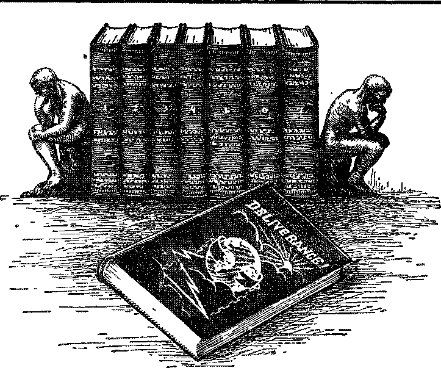

Jl.il
THE MOTHER
OF MILLIONS
ORGANIZED
OPPRESSION
ADVERTISING
GOOD AND BAD
BROOKLYN’S MODEL
POWER PLANT
Vol. VHI Bi-Weekly No. 205 July 27, 1927
OLD WRLD DYING
a copy — $ 100 a Year ‘Canada and foreign Countries $ 150, J
a Journal of fact
«*
hope awl courage
NEV vorlb BEGINNING
Social and Educational
At Home akd Abroad ................. 675
Who Arc Teaching the Boys and Girl1'? .......... 678
Advertising, Good and Bad ............... 662
Finance—Commerce—Transportation
Ittms ou the : Flood 1’iold'i. .......... 675
Construction Work on New Bridges ........... 676
No Jew Among Richest Ten .............. 677
Linens Slay Become Cheaper....... 680
The “Watch Tower” Model Power Flint ......... C87
Political—Domestic and Foreign
Will Deport Alien Undesirables ............. C75
What the Filibu-rer Accomplished ............ 675
Bulletins from Greenland’s ley Mo-’.Wm. = ......... 677
Items Kignrding M«ao and Ni.\>-T.,iA .........»‘7b
Britain, and India..................Gbv
Items on Progress in Soviet Riusia ...........
Young China Demands a Square Deal ............ CAI
The Sh.likf.ss of Sumita" Peiisecutio.ns .......... C'.G
! She'cr; About Insu'riiT Father ............ Tol
Agriculture and Husbandry Those Fatherless Chicks .......... Plenty of Room for All .......... EvcLange of Ideas on Agricultme ...... Argentina’s Surplus Beef .........
G7G
«1S6
07<S 078 FAS CAS
C,'*» 7< d 703
Home and Health
S< hoot. Lunch Tasties ........
Religion and Pihloscehy
Clashes with Apostles .......... Proving upon the Helpless ....... Demons Commit a Murder ....... Organized Oppression .......... The Motiikb of Thousands ot Uiijioa^ . . . Bible Questions and Answi i:s ....... A Tiny Boat and Its I’lfuioi s P'.ho .... Little Studies for Lrrnr, I’eopie .....
Published every other Wednesday at UM Adim- Smei 11 ookhn. N. Y., 1 . 8. A by ' WOODWORTH, HL'DGINGS & M-lIilLN ’
CapaHners and Proprietors Address: lit Adams street. Brooklyn, .V. K. U.S.A CLAYTON 3. WOODWORTH . , . Editor ROBERT J. MARTIN . Business Manaccr WM, F. HEDGINGS . . See’y and Trcas. '
Uivb Cents a Cott—$1.00 A Ybab Make Remittances to TSP GOLDEN AGE
notice to Subscribers: We do not, as a rule, send a card of acknowledgment for a renewal or for a new subscription. A renewal blank (carrying notice of expiration) ■will be sent with the journal one month before the subscription expires. Change of address, when requested, may be expected to appear on address label within one month. Fobkign Offices ; British ..... 34 Craven Terrace, Lancaster Gate, London W. 2 Canadian ......... 38 40 Irwin. Avenue, Toronto, Ontario Australasian ....... 405 Collins Street, Melbourne, Australia South African ...... 6 Lelle Street, Cape Town, South Africa
Entered S3 second-class matter at Brooklyn. N. Y.. under ths Art of March 3. 1879
Volume VIII Brooklyn, N. Y„ Wednesday, July 27, 1927 Number 205
At Home and Abroad
[Radiocast from Station WBBR on a wave length of 256.3 meters by the Editor.]
IT SEEMS that the American aviator who has been engaged in bombing Nicaraguan cities is not in the employ of Uuele Sam but in the employ of the Nicaraguan government, or that portion of it which has Uncle Sam’s backing. This is not much of a difference, but it is some, and we wish to convey no false impressions. But bombing women and children is a poor way for any real man to make a living. Such an American must be hard up for a job. Uncle Sam should use his moral influence to stop him.
WHEN the three master politicians in the
United States Senate performed their filibuster stunt they caused the suspension of operation of the Federal courts for lack of funds; they prevented a half million World War veterans from getting their pensions for two months; they virtually forced a reduction of one-fourth in the size of the United States Army, and they stopped the government’s building operations all over the country. All this was so that William Vare, of Pennsylvania, could be seated in the Senate without having his ballot boxes opened and the stupendous slush fund a rich elected him duly investigated. Such is f r. edom.
IT IS for the engineers to decide what means, if any, can be used to control the Mississippi; but in view of the fact that in flood time the river must carry twice as much water as at other times, it seems to us that widening and deepening the channel would help somewhat. It is said truly that the unused portion of the channel would silt up; and so it would, and it would be expensive to keep the silt removed; but it could be done at an expense considerably less than that caused by the great flood of 1927. Levees . are necessary, too. But most of all, America needs a graduated rainfall; and it looks as if the Lord alone could provide that, and we feel fullest confidence that He ■will do so ere long.
IT IS understood that the government will undertake the deportation from the country of the 111,673 aliens who are now in American jails, insane asylums, hospitals, poor houses and charitable institutions. The records of the Department of Labor show that 46,936 of these are to be found in New York City alone.
IT IS enough for one district to have a flood eighty miles wide in its widest part without having added to this a torrential downpour, biting cold winds, and on top of all that an earthquake; but in the Mississippi Valley they have had all these at one time. We should imagine that those who repeat over and over that ‘all is good and there is no evil’ would have a hard time explaining this situation to themselves, if they live in the affected districts. No one can deny that the flood is an evil, and that the other calamities are evils, too. But the time will come when all evils shall pass away. That will be through the power of the Lord’s kingdom.
TN THE New York Times James Harold War-■»" ner proposes, as a permanent solution of the lower Mississippi flood problem, that the Arkansas, White, Ouachita, Red and Atchafalaya rivers be interconnected, and that in flood seasons all their waters be carried to the Gulf of Mexico by a new channel, which would be a mile wide and would follow natural channels three-fourths of the way. This seems like a very interesting and sensible suggestion. One thing is certain, and that is that the Mississippi cannot be hemmed in as now and carry the flood waters of forty states. A glance at the drainage map makes one wonder that such floods do not occur every year.
NEW HAVEN has little sentiment. In the widening of one of the streets it has caused a fine sycamore known to be 227 years old, and supposed to be fully 2G9 years old, to be cut down. When the tree was destroyed it was in perfect health and had been the center of an item of considerable-historic interest since 1779, when it stopped a volley of bullets from British guns. Perhaps it is .just a> well to let the tree go and look to the future instead of the past, but it does seem a little regrettable that no other way of routing traffic vras possible and that the tree had to go.
Ae Widening of Allen Street
THROUGH the heart of the lower East Side of New York one of the darkest and dingiest of streets is being widened into a grand boulevard 138 feet wide. This will be accomplished by taking down an entire row of sixty-four old style tenement houses, and probably is only one of several changes of this nature that will take place in Nev7 York in the near future, to accommodate the ever increasing traffic and do away witli unsightly and unsanitary homes.
WHAT would our ancestors think of a great dredge such as now is being used to scoop out a place for one of the piers of the New Hudson River Bridge? At each bite it lifts enough earth to fill thirty-two of the oldtime wagons used for hauling away dirt and gravel. This dredge is the largest in the world. It is expected that it will take a year to put in the foundation for the pier.
THE Grand Canyon Bridge, now being constructed near Lee’s Ferry, in Northern Arizona, will be 800 feet in length, with a clear span of 616 feet. With the exception of a small footbridge near El Tovar it will be the only bridge spanning the Grand Canyon. Its floor will be 465 feet above the mean stream level, or 110 feet higher than its nearest competitor, located in Oregon.
WITH a view of cutting down the 500 deaths that occur annually in New York City due to defects in gas connections, the Department of Health has inaugurated some new regulations especially as respects gas tubing, which it is hoped will prevent much of this appalling loss of life. '
SOMEBODY stole a Scranton woman’s pet parrot. She made the rounds of the bird stores, looking for him. As she came into one store the bird called out, “Hello, Mamma with the result that the bird was recovered and the thief traced and arrested.
SOME more of those Sunday Supplement scientists now arise and tell us that by means of ultra violet rays they have manufactured a chicken that never had a papa. It is to laugh. All they had to start with was an egg, and that is all any chicken ever had to start with. Any farmer could have told these city rubes that hen’s eggs do not always have to be fertilized to hatch. A queen bee is never mated but once, and yet she lays fertile eggs ail her Life. These as-it-were scientists go on to say that some day they may be able to discover a formula for making a synthetic human being. Well I The most they can ever hope to do is to make a synthetic ‘Sunday Supplement scientist’; and that is as far from a real man, made in'the image of his Creator, and reverencing and adoring the Giver of every good and perfect gift, as it is possible to ever make with an ultra violet ray.
THE Union Record, of Seattle, calls attention to the fact, that the income of the average farmer is about $800; the average wage earner gets twice as much; the doctors and professors four times as much; the lawyer five times as much; the bootlegger ten times as much; the
congressman twelve and one-half times as much, and the cabinet officer fifteen times as much. Babe Ruth, the ball player, gets about ninety times as much.
THE Bowery, once the center of New York’s poverty, cheap liquor and cheap shows, but now a fairly good street, lined with business houses on both sides and an endless line of racing automobiles in the center, got its name from Peter Stuyvesant’s farm, through which the street at one time passed and to which it was the entrance. The Holland Dutch name for farm is bouwerie. Peter Stuyvesant was the last of the Dutch governors of New Amsterdam, or New York as it is now called. The Bowery is still a recognized center for the unemployed and homeless.
THE German professor now searing Americans by telling them that in three hundred years people will be born into the world only to be starved to death because the soil cannot support them all, ought to visit the little Dietrich farm of fifteen acres just outside Philadelphia where a man that knows how raises three crops each year and clears over $2,100 from his land, besides maintaining himself and family from what he grows on it. There is plenty of room.
THE New York American calls attention to the fact that in the recently published list of America’s ten richest men there were no Jews among the number, and this despite the fact that New York City is at one and the same time the center of American wealth and the greatest, Jewish city in the world. This shows plainly, as the American points out, that the Jews are bent on something higher than the mere making of money. Many of the greatest benefactions of humanity are supported by them.
SEVENTEEN hundred photographs of Mars carefully studied for several years, and spectographic observations of the markings on its surface, have disclosed to the satisfaction of California scientists that what were supposed to be canals on Mars’ surface are certainly vegetation, even the color of which has been determined. The Martian atmosphere is fifty-two miles in depth as compared with a depth on the earth of sixty-eight miles. But why the vegetation should appear in such straight lines, like a canal system, is still a problem that has not been fully solved.
K T YUBA CITY, Arizona, in the latter part of last April, clouds heavily charged with ice crystals caused the appearance of four suns in the sky at once; the real sun being in the foreground and the three mock suns displaying increasing vividness of color, in all the tints of the rainbow, and the whole wonderful display being backed by an inverted halo almost equally brilliant, stretching its upturned points far to the north and south. Astronomers have records of somewhat similar displays in 1630, 1661 and 1794.
IMFAN’S real business is the cultivation of the 1VX earth. The cities and all other things are incidental to it. Hence it is of interest to know that this year large delegations of American farmers are planning extensive tours of all the most successful European agricultural countries to see with their own eyes what is being done to keep soil and crops and herds shipshape and at the same time market products efficiently. Moreover, some European agriculturists are coming to Amercia this season for the same purpose. All this is very encouraging.
THE University of Michigan, in cooperation with the United States Government, is sending to Greenland an expedition the objective of which is to broadcast storm warnings from the mountain tops in the center of one of the two refrigerators of the earth. The other refrigerator is the Antarctic continent. Here the hot winds from the equator are chilled by coming in contact with the snow and ice deposited in Noah’s day and not yet thawed out. They become cold and sweep down off the frigid mountain tops, in the icy blasts that make the weather of the North Atlantic and off Cape Horn so treacherous and often so stormy.
TN A sermon reported in the New York Times -®- a prominent Protestant Episcopal clergyman of New York City is quoted as having said, “I do not believe for one second that Jesus came into the voild to die.” Well! Paul said, “We see Je.'-us, vlio was made a little lower than the awcK for the suffeiing of death, crowned with glory and honour. that he by the grace of Ged shock! ta.te death for every man.” (Hebrews 2: ’J) And then again Paul said of Jesus that Co “gave himself a ransom ioi all, to be toNificd In due lim (1 Timothy 2:6) And tl or again Paul su’d, “I delivered unto you first of ail that vlrch 1 abo received, how that Christ (I rd for our sins aiconlmg to th*1 seiipturos.'' (1 Corin'l mas la : 3) But vhy t?o Lwth w ' The v hole plan of salvation sving> ou tbn single pie of of Jesus Christ in the rin-om price for im?.i. The B'ble is full of A. hut tins doiwnie s-'gs that he does not believe it for a second PsQojIon is fallen! Fondvlier. Her ministeis noy do not oven know the very foundations of the C'biLtian icli-uon. Of vhui use are they.’ As aids to Christianitv ther are like grindstone^ lied to the necks of channel swimmers.
ALONG conies another prominent Episcopalian clergyman, aEo of New York, and lie is quoted in the New York Times as telling Ills tiustnig flock that ho does not Irdiove that Christ raised Lrwarus from the dead, but that instead Ue iwfi cured him of epilepsy. Oh, veil! Whai’s the use? The Apostle John said that Josv i spake of Lazarus’ death,. Mai Ilia said that h“ was so dead that v hen \ ou went near liiiu you had to hold your nose. And Jesus Himself said unto His disciples plainly, “Lazarus is dead.” But what are all these witnesses of Holy Writ compared with the wisdom of those who make their living by preaching' and “explaining” the Bible today? Verilv, the v,orld would bo far better off if these present-day preachers, who are really infidels at heart, would all get jobs as coal heavers or garbage collectors and thus be some use to humanity.
ONLY ten days apart a court in Wisconsin gave a Methodist clergyman a deserved trinuniug for preying upon the mind of a dying man to get the bulk of his money for a Methodist Hospital and in Connecticut another court trimmed a Catholic priest for doing the same thing to a poor old dying Irishman. Chureh-ianity is a business, but Christianity is not; and frequently, and usually, there is no connection or relation between the two. Often the one is the exact opposite of the other.
CALLING attention to the fact that Cardinal
OWnHL epposit'ou to Te Clfibl Labor Amendment killed it in both Massachusetts and N“w Yo’k State, because he had his opposition rcc’d 'u every church un'I»r his control. The New JFpiAhe tmrp'rately and widely remai’w:
li« p->atli as CJbolic- ai pciuhaily expo ■■■ <1 m ’heir ]<.L1 r J hdenwil io an g .1 iJe oman. zati<m vhuli is <>( ■ -ten•< (1 to px ak v ith aiithoi ,1, a> d to bo be? . v -h 'ii'i" - ion b il member*. tlie.r <til< «ur< to the ‘ a 11 In ( omch v not uulimiit to An । i - vis a - m> ; he f . 1 ean< ul.it*
TN he report on the verix of the American Asso-A ernhon for the Advcncement ot Atheism., FVemeu Hopwood, Secretary of the Association, in pait:
The- bcautv of it w, vc bme -o many ath°i*t* in the eolW'e faculties in Anma But cf eoui=e the- tar't '•av much about it, ins t1 ei voulil be thrown out; and then vhere would their Ining come fioni? But they enu uu’uo ih? «tii<knt‘-. all th<y can. A? the ivownwiit giov.s the piolessoi* will become moie and moie open in ih'ii pi.tate belief-..
npWO huge tusks five feet in length and a foot in diameter have recently been dug up in the city of London. They were found eight feet beneath the surface, vhere perhaps some elephant was mired at the time of the flood.
Cableton Beals, in The New Republic, says of American titles to Mexican oil pioper-ties:
Many of the title? to property which ve have been asked to protect, with our money and the lives of our soldiers, are not merely faulty, but weie originally obtained, according to Ameileans emploied in the oil fields, by falsification of records, fraud, bribery, and even murder. Legitimate children have been set down in legal records as bastards, hazards have been made legitimate, minors have been kidnapped, widows have been tricked, public records have been destroyed. The story of the seizure of the black gold of .Mexico is one of Borgian violence. Nothing is more needed, in order to establish American capital investments in Mexico upon a legitimate and honorable basis, and to promote sound international relations, than an adequate investigation of this whole matter; nothing else would serve to clear up the dark pages of secret diplomacy and remove the menace of future intervention.
OME years ago the United States Government suddenly learned that it was unwise to allow would-be Mexican revolutionists to import arms from the United States, as it tended to keep Mexico always in an uproar. Even a child might have known as much. But it seems that the reasons that keep arms out of Mexico are not used farther south. On March 7 th, 1927, the steamship “Ecuador” of the Panama Mail Line, fourteen days out of Los Angeles, landed at the port of Corinto, Nicaragua, 3,000 Krag rifles, 200 Browning machine guns and 3,000,000 rounds of ammunition, and since then the Diaz party, favored by the Roman Catholic Church, and the American business interests, and the United States Government, began to get along much better in its war on the Sacasa or Liberal Government. At least fifteen hundred human beings have been killed on each side in the Nicaraguan war, and thousands injured.
grace G. Knowles, former American Minister to Nicaragua, in a letter in the New
York Times says:
Without the discreditable assistance our government is giving Diaz he would not be able to carry on his fight against his countrymen and continue his resistance against the will and majority of his people forty-eight hours. His house-of-cards government would collapse within a few hours if Washington would announce that it would play fair and truthfully with the American people and no longer give him its support of either a moral or a material kind.
EFERRING to the control of Nicaragua by the firm of J. Seligman & Co., New York bankers, by and through the State Department of the United States Government, a writer from Nicaragua says in the Dearborn Independent:
Not one word of pertinent truth will the American press publish when coming from American sources on the scene of action, but volumes of futile piffle are being published emanating from extraneous sources or from interests to whose advantage it is to hide the truth.
Since the foregoing was written there have been earnest efforts made for peace in Nicaragua, such as might be acceptable to all contestants; but the United States is sending more marines and more planes, and has determined to keep Diaz in office and to disarm the Liberals anyway, if they do not voluntarily come into accord.
IN A session of the Pan-American commercial conference the representative from Argentina said plainly that Argentina has overloaded the British market with beef until there is now no profit in it for anybody. His thought was that the United States should let down the bars and let in the Argentine beef, on the ground that only five percent of American farmers would suffer from it. But the point of the matter is that those five percent do not wish to do any suffering on behalf of the farmers of the Argentine; and the other ninety-five would probably suffer also in the prices they get for their products, which they think even now are not large enough for them to live on. It is a natural enough wish on the part of all the nations of the earth that they would like to have Uncle Sam divide his prosperity with them, and they may sometime conclude to get together and try to take it, anyway. Who knows?
CHRISTIANITY, as practised by Great Britain and America, seems to be 100% more effective than heathendom. Thus, in some unknown way, one Briton, one American and three Japanese "were killed when the Chinese Southern Army entered Nanking. Forthwith, in response to the signals of American marines, the war vessels of the two “Christian” nations opened fire upon the unarmed citizens of Nanking, with the result that one hundred unoffending Chinese were slain for every foreigner killed. Nearly eight million Bibles were sold to the Chinese during 1926. If the Chinese study these Bibles diligently they will get to be less like the great powers that shelled them, each day that they live.
SEPARATING text from context, and taking advantage of the unfortunate omission of three words which had been included in the original draft, the British Government has taken the extraordinary step of sending to the United States Government and issuing to the world at large a diplomatic paper criticizing a personal letter sent by the American Secretary of the Treasury to the President of Princeton University. The British Government probably feels that the time has now come for it to throw off its diplomatic cloak, show its teeth and, in the usual Tory style, demand the earth with a fence around it, marked “Keep Off’. To every unbiased mind Secretary Mellon has established the fact that, taking into consideration all payments on account of war debts and war indemnities, all the principal debtors of the United States are receiving or will receive more than they are paying the United States. This impression, the true one, the British Government does not wish to hgve generally made known.
WITH a view to stimulating trade with the outside world the Mussolini government has ordered a ten percent reduction of wages all over Italy, and a ten percent reduction in the prices of most articles sold in the stores. On certain commodities the reduction ordered is as high as fifty percent.
INSTEAD of building up India to a place where it would be a first-class market for British goods, the Tory policy has been to rob it of the last nickel, with the result that since the year 1881 the average length of life in that country has come down from 30.75 years to 23.5. Tn the United States, in the same time, the length of life has risen from about 33 years to about 57 years. India’s might have risen, too, but for the mistaken policy of exploitation, which seems to be the beginning and ending of Tory statesmanship.
BRITAIN has 37 j million population, or 649 to the square mile on the average, a density now claimed to exceed that of any other country. Eighty percent of the population are in the cities. The World War has left Britain with a surplus of 1,700,000 women, for whom, in the natural order of things, no home and family ofi their own will ever be possible. There are "still in Wales 150,000 persons who speak only Welsh, hut it is a dying language. Nearly fifty percent' of the Welsh people now speak only the English language.
HpIIE Manchester Guatdian contains two items
from the pen of Archdeacon Owen which show the slavery of natives in Kenya Colony, a British-African possession. Under illegal orders from the local governor, in one of these instances, the natives were compelled to carry loads ranging in weight from fifty pounds for children, up to 200 pounds for adults, distances of forty-two to fifty miles, for a nominal compensation amounting to to 4 cents. The poor natives were obliged to provide their on n food and to travel back to the point of origin all for this beggarly reward. In one of these instances, in which 471 men, women and children wore impressed into service, many of the women were expectant mothers. This kind of government is what is popularly known as the white man’s burden. That is the way Kipling describes it.
T 1NENS may become cheaper as a result of the development in northern Ireland of what is known as super-flaxseed. It is claimed that 11m new seed produces tow of twice the length usually obtained, and that the new flax is free from sticky substances and more readily amenable to working by machinery than the old varieties. Extensive experiments are under way which are expected to fully confirm the new discoveries. Linens may become much cheaper.
IA FORTH used to be considered the world’s * ® head dressmaker, but he is now gradually losing his title since “His Holiness” the Pope has taken over this branch of woman’s attire. The papers tell us that no one can appear at Spanish high mass unless dressed in the uniform which the Pope thinks is O. K. The first of these uniforms will be made at Paris, but afterwards it will be copied in Spain. It takes lots of nerve to tell the women how to 8ress. Most of us have to admit that we haven't the knowledge even if we had the nerve; and anyway, it wouldn’t do us any good if we had.
DEMONS often commit murder by urging human beings to do it. This is the correct explanation of the ease now interesting New York courts in which a poor foreign woman testifies that she murdered her babies, or at least murdered one and tried to murder the other, by poison, at the command of strange voices which she heard in her ear. Those voices are the same that the Kaiser Wilhelm heard urging him on before and during the World War. They are not human voices, nor voices of those who have ever been humans, but are the voices of fallen spirit beings, fallen angels, demons, devils.
UNDER this title, at Turin, Italy, on January7 23rd, 1927, the Jesuit Father Oldra, clergyman of the dim ch which never changes, never learns and never forgives, gave a good old-fashioned Catholic sermon, urging upon his hearers their right and duty to exterminate heretics, and urging also that they be forward in getting the state to do for them what they cannot legally do for themselves. There would be nothing to prevent the good Father Oldra from coming to America and preaching this same good old Catholic doctrine to Italians here.
A VOLCANIC eruption in the Caspian Sea has brought a new island into being. The initial explosion threw columns of fire and lava three hundred and fifty feet into the air. It is thought that this explosion may have been induced by the v ithdrawal of part of the immense oil deposits which underly the "vicinity and find their outlet at Baku.
THE Soviet Government announces that during the year 1926 Russia stood next to the United States in the production of oil, having produced even more than Mexico. The Russian production is now something over ten percent more than it was before the World War. The principal customers are French, British, American and Belgian.
BECAUSE the United States refused to permit the Soviet woman ambassador to Mexico to pass through this country on her way to her post, Russia has retaliated by refusing permission to Rear Admiral Bristol of the United States Navy to pass through Russia on his way to China. But the Soviet did let Mrs. Bristol go overland through their dominions. They were not willing to discriminate against a woman.
THE Manchester Guardian, one of the highest class conservative truth-loving journals in the world, says of the Soviet system of government, “Simplified and made truly democratic, it probably suits Russia, and would function there better than any other yet contrived. It is not incompatible with monarchy, even wfith constitutional monarchy.” The Guardian expresses the opinion that in the near future, though Russia will hold aloof from the League of Nations, yet it will cooperate cheerfully with the League in some of the world’s problems.
DURING the year 1926 Russia increased her railway mileage by 856 miles. In the same year savings banks tripled their deposits. No unsecured money has been issued in Russia for the past three years. The Soviet is moving as rapidly as possible toward a government-owned super-power development. Their chief consulting engineer is Colonel Hugh L. Cooper, builder of the Muscle Shoals plant, which the privately-owned power combine of America does not wish to have operated in the interests of the people.
A CHINESE writing from London to a friend in Shanghai sums up his view of Anglo-Saxons as follows:
You cannot civilize these foreign devils. They will live for weeks and months without touching a mouthful of rice, but they eat the flesh of bullocks and .goats in enormous quantities. That is why they smell like sheep themselves. Every day thejr take a bath to rid themselves of their disagreeable odors, but they do not succeed. Nor do they eat the meat cooked, in small pieces; it is carried into the room in large chunks, often half raw, and they cut, slash and tear it apart.
A BIG, fat worm is spied by Mother Hen.
“Cluck! CluckCluck!” she cries. Tiie little chicks hear the commotion and instinctively rush to the spot. It means that there is something to eat. This is the way Mother Hen makes known to her babies the presence of the big, fat worm.
Mrs. Black Bear slouches through the woods, sniffing here and there for some familiar smell. She is alert for a few dainty berries or some other pleasing morsel. She stops at a large tree, which has the bark worn somewhat smooth. Up on her haunches she rises and rubs the tree with her back, head erect, as high as possible.
Mr. Grizzly Bear is occupied with the last sticky sweetness of honey, which is rapidly vanishing from the dripping paw, as the tongue hungrily licks, licks, licks. He rambles through the leaves and underbrush sniffing here and there for more—honey, berries, or anything that can be eaten by a bear. He stops by a big tree with polished hark. He smells that something he ha« smelt before. It is on the tree. Another bear has chanced along this way and it is not so large as he. He pricks up his ears and cautiously glances around; for the scent is fresh. Where is she? The advertisement of Mrs. Black Bear is read and understood by Mr. Grizzly Bear. Grizzly is aroused to aotion by the information thus obtained.
Advertising is not necessarily a glaring row of signs, a newspaper filled with display ads, or the circular letter the mail man delivers, announcing to the housewife the bargains of Smith & Co. Advertising is the making known of anything, through any medium or channel available. It may be the smoke ascending from the campfire of Indians, telling keen eyes on a distant hill the presence of friend or enemy. It may be the Bandittore of the Sardinian town of Tortoli, announcing between the blasts of his little horn the fact that fine watermelons can be bought at the first house south of the church. It may be the stars of heaven advertising to the beings on earth concerning the power, wisdom and might of an intelligent Creator, as the Psalmist David says: “The heavens declare the glory of God: and the firmament showeth his handiwork.”
With the scientific study of the action of chemicals and electricity, and the study of transportation, power, machinery, etc., has come the scientific study of advertising. The recording of results, their study by many minds, and improvements made here and there upon these results is the way much of the “modern knowledge” has been obtained. Occasionally there is originality, but not often. Daniel said, over two thousand years ago, that in the time of the end of this age ‘knowledge wmuld be increased, and many would run to and fro5. Man is studying man, and the operation of the mind is “under fire” along with the thousands of other things.
The brain is extremely sensitive and is affected by everything conscious to the senses. The climate, seasons, associates, environment and health influence its action. The things we need, and our employment, help to actuate its pulsations. The memories and traditions of nations; doctrines in religion and politics; the reflections, hopes, theories, discoveries and pleasures of the being; forecasts of the future; emotional sensations and habits of ancestors, are all factors which, in the aggregate of impressions upon the brain, determine the course of action which the will shall choose.
One man conveys information to another man by the use of vocal sounds, motions, objects, inscriptions and pictures. Each seeks to influence the other to act. Generally the effort is made for personal gain or prestige.
There was a time in the past when speech, motions and objects were the only means of communication. Then man began to draw pictures and associate certain ideas with these pictures, much as manufacturers do With trade-marks today. Later came phonetic signs, from which developed the alphabets and spelling of words. These led to the writing upon stone and parchment, then to the printing of books, and finally to the great daily newspapers, national magazines and large libraries of “canned knowledge”.
When a human being acts as a result of impulses existing in the creature through heredity, we call it instinct. This is true in the animal kingdom. The bee gathers honey; the ant builds a hill; the beaver cuts down trees; the bird makes a nest; the wasp manufactures paper.
HHHOSE activities of the brain called instinct J- can be played upon by suggestions. Clothing is pictured as improving the appearance. We are reminded of its protection to the body,
and the consequent comfort thus secured. Stylish clothing is presented as establishing business prestige and offering a good social standing. Its use is suggested as a means of attracting the opposite sex. We read the advertisement, desire the suggested advantages, recognize the need, and are persuaded to act. Ways and means of purchasing are made as easy as possible, and the result is a sale.
We are told how good this particular’ food tastes; how easy it is to digest; what healthgiving qualities it contains: the care with which it is gathered and prepared; and the neat, sanitary container in which it is packed and sold. A number of* other good things are associated with it. Our mouth waters, and we get hungry for that food—another sale.
The joys of outdoor life are painted before our mental vision. The canoe serenely gliding down, the stream; the auto speeding through the wooded hills; the different sports and the equipment for their pursuance and success arc repeated to us o'er and o'er. At every vantage point, where we arc apt to be thinking of such things, they are intruded before our vision—in the newspapers and magazines, in the store v inflows and street cars, along roads and railways, upon the sides of houses. Our .friends half-consciously repeat the advertising slogans, phrases and arguments. Guv minds are aroused and we are impelled to want and to buy something that may protest, sustain or give pleasure.
There are many tilings which influence thought and prompt action. The association with one another influences human nature. The spirit pervading a group is the spirit of each individual in that group. The combativeness and selfishness of man cause business competition, sports and soe’al frier n’i. Wais are a result of it.
Sex attraction is one of die most powerful factors io deteiminlng the behavior of men and women—the play, pleasuic and hospitality of of life, customs and fashions of yesterday and today. The intellectual life of man lends its weight. The most we possess in an intellectual way is copied from other tilings or people; originality is added to these from time to time.
AH people have followed some form of religion from time immemorial, and today the various codes of doctrines subscribed to by different people form, the religions thought of the present time. Curiosity causes investigation, frequently resulting in discoveries and inventions. Dissatisfaction lends to the production of things and ideas different from the established forms and customs. One, or a combination of two or more of the above suggested proclivities can be forced into action by a series of varied suggestions akin to the subject.
DVERTISEMENTS are written and designed to create reader-interest and prompt action along any of these lines. There are things which we instinctively prefer and other things which are naturally repellant. The advertising expert knows this and makes use of these mental proclivities. A thing unshapely, dirty, or dis-plnasingly odd is invariably avoided. Thore is a preference for things which are beautiful, artistic, clean, sanitary, or full of harmonious colors.
Perhaps we can better appreciate this whole subject, if at this point we quote a number of paragraphs from “The Story of Modern Science” (Vol. Ill, pp. 34, 35), by Henry Smith Williams, which gives a very interesting account of how the brain is supposed to assemble thoughts. After showing that each brain cell is a separate entity sending out roots or fibrils he continues:
Each of the filaments jutting out from the cell is held, as before, to be indeed a transmitter of impulses, but a transmitter that operates intermittently, like a telephone tore that is not always “connected”; and. like that wire, the nerve fibrils operate by contact and not by continuity. Under proper stimulation the ends of the fibrils reach out, come in contact with other end fibrils of other cells, and conduct their destined impulse. Again they refract, and communication ceases for the time bc-t’wfn fhoro paiticular cells.
Meantime, by a different arrangement of the ■various cm ductors, different sets of cells are placed in communication, different association of nervous impulses induced, different trains of thought engendered. Each fibril toien retracted becomes a non-conductor, but when' extended and in contact with another fibril, or with the body of another cell, it conducts its message as readily as a continuous filament could do—precisely as in the case of an electric wire.
This conception, founded on a most tangible anatomical basis, enables as to answer the question as to how ideas arc isolated, and also, as Dr. Cajal points out, throws new light on many other mental processes.
One can imagine, for example, by keeping in mind the flexible nerve prolongations, how new train® of
thought may be engendered through novel associations of cells; how facility of thought or of action in certain directions is acquired through the habitual making of certain nerve cell connections; how certain bits of knowledge may escape our memory, and refuse to be found for a time, because of a temporary incapacity of the nerve cells to make the proper connections; and so on indefinitely.
The attention of the being is constantly being attracted by the multifarious things around him. And those things which make the greatest impression upon the convolutions of the brain are the things that will occupy the mind for the time. By reflection upon the memories of the past— the things that the mind has already absorbed and retained—it is further occupied and influenced.
There will also arise thoughts of things which never existed, and of which no knowledge is possessed. This imagining will add its little weight to the way man thinks. Suggestions will arouse in the mind trains of thought or impel the being to follow a certain course of action. All these things play upon the brain; and the predominating emotions, thoughts and knowledge will determine the action of the will. Truly Solomon has said, “As a man thinketh in his heart so is he.”
Upon the aggregation of all these factors there is built up for you and me to absorb, attractive and well-illustrated advertisements in the magazines, newspapers, books, booklets, posters, signs and through other mediums which are used for the dissemination of information. This can be made a mighty power for good, and also for evil. Every7 phase of life is affected by advertising in some form or other.
VERT early in history there developed the association of certain articles with printed words to designate the origin of the product. The Egyptians would imprint upon the bricks their signs. The Greeks were known to place upon the earthenware and other articles the name of the maker, or an insignia which acted the same as the modern trade-mark. The Romans were users of lettered signs placed before the marts of trade directing customers where to purchase goods.
In America we have become accustomed to associate articles with trade-mark names and advertising phrases which have been impressed indelibly upon the minds of million s of people by persistent repetitions and associations with the articles and their uses in hundreds of ways.
Think of the many things an individual uses in the course of twenty-four hours. Think of the suggestions which prompted the purchase of these articles: A “Komfo” mattress and a “Simons” bed; the ring of the “Big Ben” which awakens the slumberer in the morning; the use of “Ivory Soap”, “It floats”; a “Crane” lavatory; “Gillette” Safety razor and “Colgate’s Shaving Cream”; a “Pro-phy-lac-tic” brash and “Pepso-dent” or “The New Day Dentrifice”; the “B V D” union suit, “Holeproof” hosiery, “Emery” shirt, “Kuppenheimer” suit, “Cantilever” shoes and “Arrow” collar.
Then there are the “Mazda”, “Campbell’s Soup,” “Look for the red and white label,” “Quaker Oats,” “Butter-Krust” bread and some cake made of “Pillsbury’s Best” and “Royal Baking Powder”, “Sun-Maid Raisins” and “Domino” sugar; “Baker’s Breakfast Cocoa” or “Postum”, “Yuban” coffee, and a few “Heinz” olives, “One of the 57 Varieties”; a “Rex” Sanitized Couch; the “Victrola”, “His Master’s Voice” ;“Valspar,” “The Varnish that won’t turn white,” “O’Cedar Oil”; and “Congoleum”, “The Art Rug”; a “Corona,” “Conklin” pencil and “Hammermill” Bond; a “Yale” lock, “Kodak,” “Ford,” “Exide” Storage Batteries, “Michelin” Tires, “Gargoyle” Oil. Oh, yes’ and “Uneeda” Biscuits, “Tasty-kake,” also some home-made cake baked in a “Kalamazoo Direct to You” stove and sweetened with “Karo Corn Syrup”, “For Goodness’ Sake.”
Advertising enters into every phase of life and therefore we should know more about it. The effect, power and influence of modern advertising should not be overlooked. This power, which is constantly trying to impress us and sell us something, and by subtle influences and devices persuade the mind to act, keeps the world moving. It grafts evil habits upon the masses. It forces the minds of men to accept unhealthy habits and foods. But it is also a tremendous power for good. It has skilfully placed in the homes the labor-saving devices, created healthy habits, and promoted all kinds of progress. It is the power which moves the world of humanity. It has brought happiness to many a home; and sorrow, often, too.
It is gratifying to note that recently the adver* . tising men of America have become unanimous that "truth in advertising implies honesty in manufacture”, as Colgate & Company expresses it in one of their advertisements in the Literary Digest. Unfortunately it is possible for a truthful statement to be made in an advertisement, the influence of which is productive of evil; or it may lack that which is for the best interests of humanity. Many statements in cigarette advertisements are true, but are they productive of good?
THE value of an advertisement can be determined. by the thoughts which it conveys through words and illustrations. The arrangement of the type and illustrations, in such a manner as to emphasize these thoughts, adds to its effectiveness. The easier it is to read the more it will be read. The type used must display all thoughts properly and in relative value. The ad must he of the proper size to be plain and legible.
Character can be built into an advertisement by the proper use of big type and little typo, capitals, small capitals and italics. The different faces of types are expressive. Bold-face types remind one of strength: light-face and fancy types suggest refinement and culture. White space helps to make the printing easier to read, and therefore easier for the mind to divide up the thoughts as they are presented.
The constant use of one color, or a combination of colors, will cause the mind to associate those colors v ith the thing advertised. The national use of Blue and Yellow with the Michelin Tire advertisements is an nxamp|p of this. When the same illustration is constantly used in connection with advertising it becomes associated with that thing for sale, as the Campbell Kids in the Campbell Soup advertisements.
A unique shape of border and type arrangement was used by the A. B. Dick Mimeograph people in a series of advertisements run in the Literary Digest which effectively tied together all the advertisements into one unit. The style of the Bell Telephone advertisements has made a national impression, and they are recognized at a glance as associated with the Bell Telephone Co., because of their uniform shape, style of type and style and position of illustrations and signature.
When making up an advertisement, whether it be for the sale of a product or for the announcement of a lecture, or for any other purpose, it is veil to give careful consideration to the following points:
Do the words convey interest-arousing information?
Is it written in an interesting way?
Is it easy to be understood?
Will an illustration help make more clear the thoughts to be conveyed ?
What style of type will be easily read and impressive ?
Can emblems or tradb-marks be used to tie it up to previous advertisement efforts?
How large must it be to get attention?
What shape shall it be?
How shall the type be arranged?
Is it properly balanced?
Will a border help make if more attractive?
Does it conform with the style of the series so as to have association value?
Questions like these will make possible the building of the most value into the advertisement.
Youmg China Demands a Square Deal
ASTUTELY observing that the thirty-five thousand young Chinese who have received their educations in American and European universities are now asking the Western nations not merely to teach the Golden Rule but to practise it, the Lynchburg (Va.) News rises in its pew to ask a few questions and make a few remarks. It says:
Will anyone dare to say that in China today the representatives of the so-called Christian nations are acting in a way that accords with what missionaries of those nations preach? Will anyone dare to contend that they are acting in accord v ith the professions of the nations that sent them ? The Christian nations of the world must do one of two things. They must practice Christianity or stop preaching it to others. The Chinese especially are not fools; they know when our preachments and our actions arc in total disharmony, and they are coming, or inevitably will come, to look upon us as not only un-Christian but as hypocritical. And when they so regard us they will despise as well as hate us. It would be far better not to preach to them if we are not to treat them in accordance with our preachments.
HOW many can remember the school lunch of thirty years ago ? Slices of bread placed together—with butter, molasses, Jelly, preserves, or perhaps cold meat between; a piece of cake or pie; and an apple, peach or pear—according to what grew in your particular orchard or what w’as on sale in the little corner store.
No! This lunch was not particularly well balanced. However, many of us lived in the country, where things to nibble grew wild, so that by the time we v ere through nibbling at recess, at noon and on our way home, we had devoured enough fruits barks, berries and leaves to furnish us with all the food constituents our lunch lacked.
Few of us thought of the food value of the teaberry leaf, the cluster of pigeon berries, the Indian plums, the wild cherries, the blueberries or the sassafras bark. We sought these things and ate these things merely because we liked to find them and liked to taste them. Still, we were getting our daily minerals, salts and vita-mines just as surely as we do today, now that we know there really are such things.
Without doubt the rosy cheeks of the country boy or girl come largely from the raw fruits, vegetables, leaves and berries that he is constantly eating. He does not need to read of balanced diets, for he balances his diet naturally —as he roots around the orchards, fields and woods, like the little animal he is.
They laugh at indigestion on the farm—until age begins to creep upon them; then they may have it. But is it not true that at this period the raw carrots, the berries and the natural wild foods are eaten less often! Is not this the answer to the question, “Why do I have trouble now when I never had it before?’’
Tn the city, natural raw foods are not to be had for the finding, or for the asking. Not all of these foods may even be had for the purchasing. Tt behooves mothers, therefore, to furnish as much raw fruits and vegetables as possible to the children, particularly when they are going to school and growing like little weeds.
The wild cherry, the teaberry and the sassafras bark are luxuries, to be had only when Dad takes the kiddies for a ride and proudly shows them the things he loved to eat when he was a boy. Carrots, more is the pity, cannot often be polled for immediate eating; nor can fruit be plucked from a high tree. Most of the raw vegetables and raw’ fruits may be secured easily, however, and may be eaten "as is”; or in some cases they may be combined with other foods, into a dish that is both pleasing and healthful.
Here are a few foods that may be used for the children's lunch, time and time again—not all at once, of course, but in rotation, or as the necessary ingredismts may be secured:
Peanut butter sandwiches; sandwiches containing both peanut butter and paste made of chopped raisins and orange juice; sandwiches made with healthful home-made jellies; tapioca fruit puddings in little covered dishes; whole fruits of all kinds; a little bottle of rich milk; whole-w’heat bread and butter, or whole-wheat sandwiches for a change; a whole tomato; a small dish of sterved fruit; a baked apple: one dish of hot soup, of* something else that is tasty (if there is an opportunity for the child to heat it, or if you have a small thermos bottle); graham or oatwieal crackers; and a bar of chocolate once a w’eeu or so.
None of these things is expensive. None requires a great deal of preparation. Such lunches, how’ever, will go a long w’ay towmrd making healthy children.
A little dish of tapioca pudding will ahvays please a child at lunch. In addition to the eggs, milk and sugar, this dish contains tapioca, which is in itself a very rich and easily-digested food. Then again, it may be made into a fruit pudding, so that the child will have the benefit of the minerals and salts of the fruit as wTell as the carbohydrates of the topioca.
Here is a recipe that may be made up in a very few^ minutes and will prove very pleasing, either for a school lunch, or for a lunch at home, when the children are able to come home for this meal:
1 quart hot milk
i cup quick-cooking tapioca
1 egg i cup sugar Pinch of salt Flavoring
Cook tapioca and salt for 15 minutes in hot milk, in double boiler, stirring frequently. Add 1 tablespoon of cold water to the egg yolk and beat well. At the end of 15 minutes stir the egg yolk and sugar slowly into the milk and tapioea. Cook -until it begins to thicken like custard.
Remove from heat and whip in the beaten eggwhite. Add vanilla, orange or any flavoring desired. The white of egg may be used as mciii.gue, if you intend to serve the dish at home. This is also delicious poured cold over any fruit or denies, either fiesh or canned. Raisins, prunes, figs, dates or nuts may be fhnA hue k vidle cooling.
If the children go to school in the country, urge them during the berry season to eat strawberries, raspberries or blackberries at noon, either with sugar and cream, which can be placed in the lunch basket, or stirred into a tapioca cream which you have made for them. Thore is a hire about “making your own dessert’’ which will keep them interested as long as berries are procurable; and those berries are good for them, as are the creani, the sugar and the tapioca ] lidding.
Tae cich Tower'’ Xodcl Power Plnnt
Ltcp> od( d 'Oil 0. Poirei’’ 'hicujozine.]
A >1 HIKING example of an oil engine power ■T'i- nlmit Amalie,] midm virtually ideal condi-*„>.j- ai’.W? d i y the iwuit equi] ment of the Wa- n "D vur and Tn.et th eiety of Brook-Ivl wills tan oil omdi.e units, iordering their iwabh'-limeut cntnAy inm*pendeni of any out-siiie eouice of power. The careful planning ’.ieh has ju<tilicd die description of this installation as a “model plant” is not only reflected in tie engine room, but aho in the enrire layout of the new building erected by there international-b. known publishers of religious literature.
The Watch Tower Bible and Tract Society, mTliatid with the International Bible Students Arocciatlor, has had a long anti distinguished m-mry and tie broad scope of present activity « is rendered doubly impressive by the fa-1 that the institution is operated entirely - ..bout proof to its sponsor.-- or its members.
ddl (->f ’he v, mkeis in the Society's piess are T>Ke siiideiito who Lave volunteered their ser-vii t>: ui rchmn they iceeive a nominal monthly salaij amt are housed by the Society in a dormitory which is situated a few blocks from the ] Ant. With such altruistic conditions prevailing. the entire staff seems Io be imbued with an unastial spirit of progressiveness and devotion to high quality of workmanship.
The output of the Society ranges from 10,000 to 18,000 bound volumes per day, in addition to a monthly magazine which has a circulation of ever 100,000. Bibles and tracts are printed in twenty-seven different languages and are distributed to branch headquarters throughout the L’mted States and Europe, from v. Inch they are sold by house-to-hou-e canvassers who alro work on a gratuitous bas:s. All of the p'dfl’eations are sold at a price which barely covers the cost of production and distiibution.
The most modern refinements in printing and bookbinding machinery have been adapted to the production of this immense output of printed matter, the majority of the operations being performed by automatic machineiy. All of the individual machines are fitted with diiect motor drive, and in the instances wlmre it is usually customary to heat type metal and various parts of the presses with gas, considerable progress is being made in the use of electrical heating units.
It is not surprising in such a progressive atmosphere, to find the oil engine's s fleeted as the sole source of power. Tn this e-'miirotmri if is interesting to note, too, that the er-tnnates wliich were pi epared, analyzing the coff of various forms of power, were based on the operation of the plant as though it were a regular commercial press, paying the usual wage scale of such organizations. The choice of oil engine porver by the Watch Tower Society was therefore made on a. cost basis which m entirely similar to the operating costs of any industrial establishment.
The engine room is located on the ground floor at the front of the building. Large steel sash window's open directly onto the sidewalk, not only affording excellent daylight illumination, but also making it possible for passersby to view
the entire installation. In this respect it is a veritable oil engine “shop window”.
The foundations of both engines are of cast monolithic. In no place does the foundation or its trench make direct contact with the engine room floor, building, footings, or walls. All of the piping is mounted on steel pipe racks in under-floor trenches, covered with steel floor plates. Compressed cork slabs one inch thick serve as a separation matting between the trench walls and the flooring, or wherever the flooring would otherwise come in contact with the engine footings.
Each system of piping has been painted a distinctive color so that the operator can tell at a glance the function of each pipe line. Couplings have been fitted so that it is possible to disconnect each straight run of pipe, greatly facilitating cleaning the lines or making repairs. Considerable attention has been paid to the layout of this piping, and the resultant accessibility and neatness of the installation fully justify the effort expended.
The cooling water system is arranged so that the operator can flow city water through the cooling packets to waste, or can recirculate the water through a cooling tower on the roof, using city water for the makeup supply. A roof tank is cut into this recirculating system and is arranged so that it can be drained in cold weather, to prevent any possibility of ice formation. All of the valves controlling the water circulation are located in the engine room, centralizing this control in a position adjacent to the water pumps, which are mounted on a concrete lodge at one side of the engine room.
An additional factor of safety is achieved in this model plant by the provision of a recording instrument which indicates the level of water in the roof tank, on a chart in the engine room. A change of one foot in the water level of the 1500 gallon roof tank will cause an alarm bell to ring, warning the operator of an impending shortage in his water supply. Slight Flow Indicators are fitted to the cooling water outlet of each engine, and these have an electric alarm connection arranged to cause an alarm bell to ring if the water supply fails. Thermometers reading up to 212 degrees Farenheit are located in the water inlet and outlet connections of each, engine.
An all-steel cooling tower is now under construction for the Society and v’ill be installed on the roof to handle the recirculated jacket water. The hot water coming from the engines is also passed through the hot water system of the building and is used for showers, washing, etc.
Il will thus be seen that unusual precautions have been taken to insure constant and accurate supervision of the cooling water supply, but the resulting ease of control makes for such reliability and simplicity of operation that these refinements may be accepted as well established installation practice.
Installed outside of the Watch Tower Society’s building, in accordance with the Fire Underwriter's regulations, is a 12,000 gallon cylindrical fuel oil tank. Located near this tank, inside the building is a motor driven Fuel Oil Transfer pump, which delivers fuel oil from the main storage tank through a pipe fitted with a single pass oil filter, to a 200 gallon day tank which is located beneath the engine room floor. The transfer pump may be controlled either from the engine room or from the pump itself at the rear of the building. The day tank is also a cylindrical tank, with pipe connections for sounding, and with a suction and return connection for each engine.
All the wiring in their engine-room is lead-sheathed and carried in conduits. The switchboard design is complete, and the wiring work is first-class and really superior to the average installation of this kind.
The clean-cut appearance of the Watch Tower plant has been obtained without any sacrifice of accessibility or efficiency. In fact the nominal additional effort involved in improving the appearance of their engine room will be more than repaid by the convenient arrangement of all the component units. Even in the preparatory stage the installation of this plant attracted considerable attention in the metropolitan district, and it is undoubtedly -worthy of very careful study as an example of the superior operating characteristics which can be assured by well-considered preliminary planning and selection of equipment.
[Radiocast from Station WBBR on a wave length of 258.3 meters by Judge Rutherford.]
rpODAY it is a well-known fact, to all people who think, that there exist strong governments or world powers on earth. The greatest amongst these is the British Empire. It is also well known that, a small minority rule and the great majority must bow to that rule regardless of how oppressive it may be. It is also well known that the ruling factors composing the small minority and controlling the people are made up of men of high finance, professional politicians, and aided and abetted by the clergy, who claim to represent God. The mass of man-Idnd mourn and chafe and fret under their load and wonder why conditions are such. This morning 1 shall assign some reasons as disclosed by the Scriptures showing why these conditions exist.
A world power is an organized government or earthly organization with great power and having no conscientious scruples against enforcing that power regardless of the suffering it may entail upon others. World powers began to be organized many centuries ago. The superlord or invisible ruler of all such has been and is Satan the Devil.
In a previous lecture we saw how the Devil induced the people to build the Tower of Babel in order to turn them away from God and how God confused their language. This He did to teach the people the lesson that Jehovah is the true God. The people soon forgot that lesson, however. Today we will see how within a short time thereafter Satan organized a great world power that ruled and controlled and oppressed mankind.
If you will follow* these lectures you will see that God has permitted men to be overreached by the Devil in order to teach them by experience lessons of the greatest value. From time to time God has demonstrated that His power is far superior to Satan’s. This He has done for at least a twofold purpose: (1) To show the people that He is the great Jehovah God ; and (2) to foreshadow the complete deliverance of the people and the everlasting blessing of all those who love righteousness.
To aid you in following the consideration of the subject this morning I announce that these are the cardinal points, to wit: Jehovah is God and the Friend of man. Satan is the very embodiment of evil and the oppressor of the people by his organized world powers. The complete deliverance of the people is foreshadowed and the time now is for the people to learn a lesson of the greatest importance.
After the fall of the Tower of Babel and the scattering of the people throughout the earth they gathered in tribes in various parts of the earth. Many of these found an abiding place in Egypt, and there Satan erected his first great world power on earth. According to history Menes was the” first ruler. Without hindrance from God, and therefore by His permission, men there built a great world power. It proved to be a mighty military system and a great oppressor of the people. It was an empire of riches, learning and religion; and these three elements combined to rule the people and make their burdens grievous to be borne.
In the meantime God was dealing with Abraham, Isaac and Jacob, and working out His great plan which He had made from the beginning. In due time Joseph, the beloved son of Jacob, was sold by his brethren to a band of wandering tradesmen; and by them he was carried away to the land of Egypt. Both Joseph and his father served Jehovah God, and the Lord God overruled for good this experience of carrying Joseph away. After a time Joseph, on a false charge, was wrongfully confined to prison, where he lingered indefinitely.
Then the king of Egypt had a dream which he could not understand and which none could interpret for him. He called the magicians, the Devil’s representatives on earth, to interpret his dream; and they could not. He was told of Joseph in prison; and the king sent and had Joseph brought before him. Here again the Lord Jehovah rewarded His faithful servant.
By the grace of the Lord God Joseph interpreted the dream of the king, foretelling that there was to come upon the land of Egypt seven years of plenty and seven years of famine; and he advised the king to cause to be laid up great quantities of food during the seven years of plenty to be used during the famine. Joseph was here a faithful and true witness to the only true God, and for his faithfulness God rewarded him. God never fails to reward faithfulness to Him.
The king then made Joseph the first man of the land under the king, and Joseph thereafter
became the active ruler of the land of Egypt: "And Pharaoh said unto his servants, Can we find such a one as this is, a man in whom the spirit of God is? And Pharaoh said unto Joseph, Forasmuch as God hath shewed thee all this, there is none so discreet and wise as thou art; thou shall be over my house, and according unto thy word shall all my people be ruled: only in the throne will I be greater than thou.”—Generis 41:38-10.
Josm h was a great and good v.itnoss to the people of Etrypt. Ue- showed the people a?5 outline of the Lord Jehovah's great plan to redeem them and dclhor them and to bless them. Of course they did not understand it then, but it was written more pa rticdarly for the benefit of the people now uho are being permit led to understand tlw divme plan.
During the sew : rears of plenty Joseph v ith absolute povi r I i v.,d m .t s res of c>-ain to be laid up. VGA the famine was sore upon rh“ land the i>c• mF u in need. Ji-poph bought all their corn for the king. The next year the people came hack and said to Joseph: "We have no corn for >nle.” Joseph then said to ilieni: "Sell mo your cattle.” Juid he bought all the cattle from the poop!--* for the kina.
Tin' next roar the famine continued and the people came to hint end said.: “TVe have no corn and no cattle": and then Joseph said: LS-Jl me your land.” And lie bought all of the land for the kins'. The famine continued upon the people, and tin' nwxt year they came back and said to Joseph: AVe have neither corn, nor cattle, nor land, but w will voluntarily sell mp’wdvcs and become the servants of I’ha-aoh the king.’ (Genesis 47:14 A>) Thus the people gave up < ven thing that they might get bread from the h.and> of Joseph.
This pictun d how the people in due time will become the voluntary servants of the antirypieal Joseph, the Lord of righteousness, that they may get the bread of life and live. Joseph foreshadowed Jesus Christ, who said concerning himself: ‘T am that bread of life. ... This is the bread which cometh down from heaven, that a man may eat thereof, and not die.” (John 6:48, 50) Joseph readjusted the affairs of Egypt and the people were content. Thus God showed the people how goodness and faith, bring the reward of peace and blessing. Joseph therefore was a mighty witness for the Lord in the land of Egypt.
After the death of Joseph there came to the 'throne a nerv king in Egypt who fell an easy victim to the wiles of Satan the Devil. “Now there arose up a new king over Egypt, which knew not Joseph.” (Exodus 1:8) Under the Teign of this arrogant tool of Satan the people soon forgot the goodness that they had received from Jehovah through the bands of His faithful servant Joseph. Egypt then grew to he a great and wealthy world power, the like of which the earth had never known. The Devil now over-irwehed the people; 1hey forgot God and worshiped four-footed boasts and creeping Tiings instead. Troy fell easy victims to Smurfs scheme- of goverimi(mi.
Tim ultra-rich were sponsor-, for tlw m-Ltaiy, the learned became the political schvi w<-, and ll.e prints of the D-'vil uligion led th-' propio info a senseless vorjip of the Devil : ; ffi.gs v,hich he created for tlv'in to vowhip. These three elements, the eon.mm .Jal, pehthj. mid (..eclosiasiieal tmtoi' uhiih Altan own'’zed, operating togi'b-w formed the vo>rM power by viiich he controlled the p'-opl,. Such a '.wild power is properh sxniholiz/'d by a beast.
The government, and by (hat are mount the rilling factors, became arrogant r.nd "cbc’.licus against God and great oppressors of tl < p< op!e. Images of the Pharaohs are preserved to this day, and upon lire- frito of tin-in will bo soon the expression of arrogance, disdain ami u luempt. •Satan established amongst (lie people various images and false gods which he induced them to worship: thus following Ills iwual prm lice cf placing before mankind anxihing that would turn them away from The true and livng God, that they might not learn about die divine plan. A similar condition prevails in. the oa?:h ^eday-
All this time God vas not without t-eire w’t-ness in the land. Joseph had Hought >-:s father and his brethren into Egypt, Their off-prmg had greatly multiplied, and uo<v there was a host of Israelites in the land of Egypt. Th°se were the people of God who worshiped the true and living God, and from the death of Jacob they 'were recognized by Jehovah as His chosen people ou the earth. For this reason the Devil saw to it that they were greatly oppressed. He would have caused their complete destruction except for the protection of the Lord. Without doubt the Lord permitted His people to abide for a time in Egypt inorder that He might teach His intelligent creatures certain lessons which
- 1927 qolden aqe
they needed, and which in due time they would begin to understand.
When Jacob was on his death-bed he prophesied that there should come from the tribo of Judah a mighty One who would be the great Deliverer of the people, and that unto him should the gathering of the people be. (Genesis 49:10) The Devil knew about this prophecy, of course. He set about to devise schemes for the destruction of this promised One. The children of Israel continued to reside in Egypt, and their offspring had multiplied at a greater rate than the Egyptians. Therefore the king gave instructions that the midwives should take notice at the time the Hebrew women gave birth to children and that if a son was born it should be killed, but if the child was a daughter it should be permitted to live.
Clearly this was a scheme of the Devil; he would have all the males killed in order that he might be certain to get the One that was promised to come through the tribe of Judah. The Devil was taking no chance of this Mighty One’s being born and being permitted to live. But of course he had not the power to thwart God’s purposes even though he egotistically thought he had.
God helped the Israelitish women, and the birth of Hebrew children continued. Finally Moses was born, and by a miracle of God he was saved from being destroyed. He was taken into the home of the royal family, or rather into the royal house, and there received all of its privileges. (Exodus 2:1-10) The Lord saw to it that Moses was preserved, because of and through Moses He would now make a type of the mighty Deliverer who was to come; and we will hereafter see how the Devil employed the same kind of scheme to destroy the Savior of the world that he employed to destroy Moses. 9
Moses had faith in God. (Hebrews 11: 24,25) Moses would rather take his chances with his own people and serve the true and living God than to have all the comforts and ease and honor that the Devil and his world power could confer upon him. God continued to overrule and shape the conditions of His chosen people, that in His own due time He could give a testimony to man of His goodness and loving kindness. ,
Conditions arose that made it necessary for Moses to go to live in another land. Oppressive measures employed by Paraoh the king of Egypt against Israel grew worse and worse.
Their cries came up to Almighty God. “And the Lord said, I have surely seen the affliction of my people which are in Egypt, and have heard their cry by reason of their taskmasters; for I know their sorrows; and I am come down to deliver them out of the hand of the Egyptians, and to bring them up out of that land unto a good land and a large, unto a land flowing with milk and honey; unto the place of the Canaanites, and the Hittites, and the Amorites, and the Perizzites, and the Hivites, and the Jebusites. Now therefore, behold, the cry of the children of Israel is come unto me; and I have also seen the oppression wherewith the Egyptians oppress them. Come now therefore, and I will send thee unto Pharaoh, that thou mayest bring forth my people the children of Israel out of Egypt.”—Exodus 3:7-10.
Moses went at the direction of Jehovah to act for the people of Israel, and Aaron was sent by the Lord to assist Moses. Obedient to the command of the Lord Moses and Aaron appeared before Pharaoh and said: “Thus saith the Lord God of Israel, Let my people go that they may hold a feast unto me in the wilderness.” A mighty world power now was Egypt, and the Devil was its invisible ruler. Egotistical and wicked beyond description of human words, Satan caused his visible representative, the king of Egypt, to manifest the greatest degree of arrogance and defiance to the Almighty God. To the request made by Moses to the ruler of Egypt, the Devil’s representative said: “Who is the Lord, that I should obey his voice to let Israel go? I know not the Lord, neither will J let Israel go.”—Exodus 5: 2.
The oppressive burdens of the Israelites were then greatly increased. God said to Moses in substance: T will show Pharaoh who I am. Now shalt thou see w’hat I will do to Pharaoh.’ (Exodus 6:1) The oppression and injustice heaped upon the people of Israel in the land of Egypt furnished God an opportunity to make a demonstration of His power, and to testify again to man that the Lord is the Almighty and Eternal God and that He is the God of justice, wisdom, love and power. The people had forgotten God, and now the time had come for God to go down into Egypt and through His visible representatives, to make for Himself a name.
Afterwards the prophet referring to this event in Egypt, wrote: “And what one nation in the earth is like thy people, even like Israel,
whom God went to redeem for a people to himself, and to make him a name, and to do for you great things and terrible, for thy land, before thy people, which thou redeemedst to thee from Egypt, from the nations and their gods'?’’ (2 Samuel 7:23) Then God said to Moses: "And the Egyptians shall know that I am the Lord, when I stretch forth mine hand upon Egypt, and bring out the children of Israel from among them.’’—Exodus 7: 5.
In carrying out His plan and purpose God again sent Moses and Aaron in before the king of Egypt and requested that the people might he permitted to leave Egypt. This was refused. Then God sent plagues upon Egypt. The river was turned into Mood. There came a plague of frogs, lice and flies. Pharaoh -would repent a?d promise to let the children of Israel leave Egypt, only again to become arrogant and refuse to let them go.
Them God said to Moses: “Yet will I bring one more plague upon Pharaoh, and upon Egypt: aftf rwards he will let you go hence: when he riiall let you go, he shall surely thrust you out hence altogether.’’ (Exodus 11:1) Tim Lord now hogan to make preparation for n great demonstration by which He would teach the people and all of His intelligent creatures that He is the great Jehovah God. He directed Moses to call together the leaders of Israel and instruct them that each family Humid on the tmUh day of Nisan, the first month, take up from the flock a lamb without blemish, a male of the first year; that they should keep this lamb up until the fourteenth day of that month, ami then it should he killed and the blood sprinkled upon the doorposts and over the door. This v. as intended as a protection to the Israelites who would observe this law.
“For I will pass through the land of Egypt this night, and will smite all the firstborn in the land of Egypt, both man and beast; and against all the gods of Egypt I will execute judgment: I am the Lord. And the blood shall be to you for a token upon the houses where ye are: and when I see the blood, 1 will pass over you, and the plague shall not be upon you to ’destroy you, when I smite the land of Egypt.” —Exodus 12:12,13.
Moses caused the Israelites to carry out the instructions, and everything was made in readiness for the night. Each family that had taken up and had sprinkled the blood on the doorpost went inside and Availed. On that eventful night, when the arrogant king and the other Egyptian subjects of the Devil who trusted in the evil gods for protection, were sleeping, apparently in security and peace, the great God of the universe caused His angel to pass over the land and east down their false gods and smite with death every one of the firstborn of Egypt.
None were spared except those of the Israelites who had obeyed the Lord by sprinkling the blood over the doorposts. The smiting included both man-chi Id and beast, even from the son of the king to the humblest in the land. At midnight the king arose and found his firstborn silent in death. The alarm xvas given and a great cry and Avail Avent up from the people all over the land, because there Avas not one house of all the Egyptians Avhere there Avas not one dead.
The king called for Moses and Aaron and commanded that they and all their children leave the land immediately. “Also take your flocks and your herds, as ye have said, and be gone; and bless me also. And the Egyptians were urgent upon the people, that they might send them out of the land in haste: for they said, We be all dead men.” (Exodus 12: 32, 33) Thus God, true to His ax ord, gave Pharaoh ample reason to knoxx xxho is God, in ansxver to his arrogant and disdainful question. (Exodus 5: 2) The Lord had smitten and destroyed all of the Egyptians’ images and false gods throughout the land, and had filled the land of Egypt with grief and avoo. It is recorded: “For the Egyptians buried all their firstborn, Avhich the Lord had smitten among them: upon then1 gods also the Lord executed judgments."—Numbers 33:4.
Seemingly this terrible disaster Avliich befell all the firstborn of Egypt, and xvhieli threw down $nd destroyed all their false gods, would have been a sufficient lesson to Pharaoh, and even to his super-lord the Devil, that it is use less to fight against God. But the egotism and arrogance of the evil one seemingly know no limitation. God knew what Avould be in the heart of Pharaoh, andpvhat Satan Avould induce him to do. He purposed now to further teach them a lesson: “That the Egyptians may know that I am the Lord.”—Exodus 14: 4.
A great multitude of the Israelites, numbering more than 600,000, beside children camped on the shores of the Red Sea. After the king'qf Egypt had mourned a time for his dead son, and awakened to the fact that the Israelites had fled, he ordered his army of chariots and men to follow the Israelites and destroy them. The Egyptians came upon the Israelites encamped. The Israelites were greatly afraid, and cried unto the Lord and reproached Moses for having brought them there to be slain by the Egyptians. "And Moses said unto the people, Fear ye not, stand still, and see the salvation of the Lord, which he will shew to you to day: for the Egyptians whom ye have seen to day, ye shall see them again no more for ever. The Lord shall fight for you, and ye shall hold your peace.”— Exodus 14:13, 14.
And now behold the mighty power of God. He caused His angel to go before the camp of Israel and to cause the pillar of cloud to stand between the Israelites and the Egyptians, but He gave light to the Israelites. Then Moses, at the command of the Lord, stretched out his hand over the sea; and the Lord caused the sea to go back by a strong east wind all that night and made the sea dry land, and the waters were divided.—Exodus 14: 21-31.
Having been safely delivered on the eastern shores of the Red Sea, saved from the hordes of the Egyptians, the children of Israel sang a song of deliverance. “Then sang Moses and the children of Israel this song unto the Lord, and spake, saying, I will sing unto the Lord, for he hath triumphed gloriously: the horse and his rider hath he thrown into the sea. The Lord is my strength and song, and he is become my salvation: he is my God, and I will prepare him an habitation; my father s God, and I will exalt him. The Lord is a man of war: the Lord is his name.”—Exodus 15:1-3.
Thus ended the Devil’s first world power. Like a mighty millstone it was cast into the sea. Thus God executed His judgment against the false gods and magnified His own name. (Exodus 12:12) The Lord intended that the people should ever remember that day for their good. To this end He caused His prophets to make record of that great event for His own good purposes.
"And Jethro said, Blessed be the Lord, who hath delivered you out of the hand of the Egyptians, and out of the hand of Pharaoh, who hath delivered the people from under the hand of the Egyptians. Now I know that the Lord is greater than all gods: for in the thing wherein they dealt proudly he was above them.”—Exodus 18:10,11.
“Thou, even thou, art Lord alone; thou hast made heaven, the heaven of heavens, with all their host, the earth, and all things that are therein, the seas,, and all that is therein, and thou preservest them all; and the host of heaven worshippeth thee. . . . And didst see the affliction of our fathers in Egypt; and heardest their cry by the Red sea; and shewedst signs and wonders upon Pharaoh, and on all his servants, and on all the people of his land: for thou knewest that they dealt proudly against them. So didst thou get thee a name, as it is this day.” —Nehemiah 9: 6, 9, 10.
“Nevertheless, he saved them for his name’s sake, that he might make his mighty power to be known.”—Psalm. 106: 8.
Jehovah was good to the nation and people of Egypt through the ministration of His faithful servant Joseph. The Egyptians failed to appreciate that goodness and refused to take heed to God, but followed after the Devil and his representatives. God expressed His indignation against Satan and the world power he had builded and at the same time made a picture of greater things to come.
Egypt was typical of the end of the world, and pictured the present organization of world powers which shall go down in a terrible time of trouble. (Revelation 18: 21-24) God’s goodness has been wonderfully made manifest to the peoples of this world. His goodness has been spurned and this has been done at the instance of Satan the enemy. What befell Egypt shall again be repeated, only on a far greater scale. —Matthew 24: 21, 22.
But why should God kill the firstborn of Egypt and then overwhelm the entire army in the sea? Was that done merely to express the vengeance of God, and was it done for a selfish reason? There was no selfishness on God’s part whatsoever. Life is a gift from God. (Romans 6: 23) All the human race, because of Adam’s sin, live only by the grace of God and -without any right to live. The firstborns of Egypt, of course, came within this rule.
God’s plan provided that in the future He would awaken these out of death and give them individually an opportunity for life under favorable conditions. The heart of each one of the governing factors of Egypt was closely attached to his firstborn. The death of the firstborn, as a punishment for their defiance of God, would teach these governing factors of Egypt that their gods were false gods and had no power to give them life, and no power or ability to stand before the great Jehovah God.
These scriptures above quoted declare that this great demonstration of power was that God might (jet for himself a name. In whose mind did God desire to magnify himself and make for himself a name? Not in the mind of the Devil, because the Devil had gone on in the way of wickedness in utter defiance of God and was then under the st ntence of death. It was in the minds of the people of Israel that God desired to establish a name for himself. Me had selected that people as Ills own and would now use them for His own purposes, it was therefore for their benefit, and for the benefit of all peoples of God who should come after, that God performed this marvelous act.
Let the people take notice that Jehovah is the Almighty God and that the destruction of Egypt was but one of the steps in the outworking of His great plan. As the peoples of earth learn that the power of Almighty God operates always in exact harmony with love, and for the benefit of mankind, then they will learn to love and obey and serve Him and will receive from the Eternal One the blessings which lie has provided for all those that do manifest their love and obedience for Him.
God had f.aved the firstborn of each household of H.v Israelites Because of the faith and obedience cf their fathers. This should serve as a Icis.-mu to them that ever thereafter they would render olx.hmwe to the trim and loving God. Would they do it?
The deliverance of the people of Israel from the oppressive hand of the Egyptian world power was really the beginning of God’s law covenant with Israel. It is written in Hebrews 10:1 that the things of the law foreshadowed bettor things to come. The things to come therefore must be far greater than the shadow. The lesson therefore that we are to learn from the consideration of Egypt and the Israeliies is that all the world powers of earth are under the control of Satan the Devil; that the oppression ofi mankind will continue so long as the Devil is permitted to rule; that within a short time God will restrain Satan the Devil and destroy his organization; and that the way of relief of mankind from the oppressors is now to turn away from the evil systems and serve God and patiently wait for the day of complete deliverance.
Mankind has so long been under Ilie control of Satan that he is fearful to break away. He reasons that he must take a certain com se in order to get on. All those who love the Lord begin to east away all fear. They hear and heed the words of the Lord God, who says to them in Proverbs 3:5,6: “Trust in the Lord with all thine heart: and lean not unto thine own understanding. In all thy ways acknowledge him, and lie shall direct thy paths.”
This morning I commend to you the Word of the Lord and that you study it and follow it because ID's Word, and that alone, leads the way to complete deliverance and to the hhwsings of everlasting life. Tn my lecture next Sunday T shall submit to yon proof showing that God foreshadowed His righteous government, evidences of which righteous government are now beginning to be manifest to the people.
The Sillmesf? of Sedition Persecutions
HpHE late (’hades P. Steinmetz, greatest of -&■ tin* world's electrical engineers, one of the ino-t honored and honorable of America’s citizens. was exiled from Germany because he was a Socialist, came to America by steerage and managed to get ashore from Ellis Island only because a fiicnd who was with him showed a considerable sum of money and guaranteed that lie would not become a public charge. In the truest sense he helped to make America vhat it Is today, and this was only possible because some German officials were as imbecile as are many American officials; they maltreated him because ho was a Socialist. Germany lost him and America gained him and the whole world profited by their imbecility. We get this idea from the able and progressive Commerce and Finance, a journal for thinkers, not morons.
IF SOME of us had been standing by when
Laban said this to his only sister we might have been inclined to suggest to Laban that he was being a little generous in his wishes, and that a few less in the family would suit Rebecca just as well.
And probably if Laban heard our objection he would have responded something to this effect, “I do not know how I came to say the thing I just said, but it seemed to pop into my head. I meant, of course, that I wished that her posterity would some time become a great people.”
In a natural way what Laban looked for has come to pass. Rebecca was the mother of Jacob, or Israel, as lie is called; and all the Israelites according to the flesh that have ever lived in the world, or now’ live, are her descendants.
Today there are 10,527,000 Jews in Europe, of whom 3,500,000 are in Poland, 3,263,000 are in Russia and 295,000 are in Great Britain and Northern Ireland. There are 3,742,000 in North America, of whom 126,000 are in Canada and 3,600,000 are in the United States. The Jews in New York City number 1,643,000, or twenty-nine percent of the population. There, are 108, 000 Jew’s in South America; 614,000 in Asia, of whom, in the year 1925, there were 115,151 in Palestine; there are 565,000 in Africa and 24,000 in Oceania, making the present Jewish population of the world 15,580,000, according to the latest and most reliable statistics.
According to the Bible chronology Rebecca became the wife of Isaac when he was forty years old, which event occurred in the year 1980 B. C. Her sons, Jacob and Esau, were born twenty years later, or in I960 B. C. The total time, therefore, from the birth of Jacob down to the year of our Lord 1927 was 3886 years.
Figuring that Rebecca’s descendants have gradually grown in numbers from the birth of Jacob until now, and that three generations have appeared in each century, the total number of her direct descendants that have ever lived has by this time amounted to 908,158,200, or a little less than even one thousand millions. But it is nevertheless a very considerable family, amounting altogether to about the present population of all of the great continent of Asia; and in a natural way Laban's wish for his sister may be said to have been gratified.
IT IS not until we come to the New Testament that we can begin to understand the full importance of this item of ancient history. In his epistle to the Galatians Paul discusses at some length events in the lives of Abraham, Hagar, Ishmael, Sarah and Isaac. Hagar, he reminds us, represents the Law Covenant; and her child Ishmael represents the Jewish people. Sarah, he further reminds us, represents the Oathbound Covenant of God that all the nations, kindreds and families of the earth shall be blessed; while Isaac represents The Christ, the Promised Seed, which is to bring in all the promised blessings. From these several items we see plainly that he 'wishes us to understand that in the major events of his life Abraham represented Almighty God. The apostle sums up his argument to the Galatians as follows:
“Tell me, ye that desire to be under the law, do ye not hear the law? For it is written, that Abraham had two sons; the one by a bondmaid, the other by a freewoman. But he who was of the bondwoman was born after the flesh; but he of the freewoman was by promise. Which things are an allegory: for these are the two covenants; the one from the mount Sinai, which gendereth to bondage, which is Agar. For this Agar is mount Sinai in Arabia, and answereth to Jerusalem which now is, and is in bondage with her children. But Jerusalem which is above is free, which is the mother of us all. For it is written, Rejoice, thou barren that bearest not; break forth and cry, thou that travailest not; for the desolate hath many more children than she which hath an husband. Now we, brethren, as Isaac was, are the children of promise. . . . Stand fast therefore in the liberty wherewith Christ hath made us free, and be not entangled again with the yoke of bondage.”—Galatians 4:21-28; 5:1.
With the understanding that Abraham represents Almighty God, that his wife Sarah represents the Oath-bound Covenant and that Isaac represents The Christ, we approach the outstanding events in the lives of Abraham and Isaac with confidence that we shall find in them much that will throw light upon God’s great plan of the ages; and such we do find. The twenly-fourth chapter of Genesis, which contains the account of the marriage of Isaac and Rebecca, is no exception to this rule. We examine the account.
BRAHAM summoned his oldest servant that ruled over all that he had, and admonished him to find a wife for Isaac. He was not to take a wife for him from among those who had no relationship to Abraham, but was to go to Abraham’s own country and to his own people. Twice Eliezer was admonished that he must not take Isaac v. ith him on the journey. Isaac’s chance for a bride de]tended upon the willingness of the bride-to lie to follow Eliezer to a land that she knew not of, and without ever having seen her intended husband.
When Eliezer set out upon his journey he took with him ten camels. These camels were essential for the journey he was then to make, much of which was across a desert. The camel has been specially built by the Almighty for traversing desert spaces. The variety in use in Abraham's time, as today, had the remarkable arrangement of its interior economy which enabled it to go for four or more days without drinking: yet it has the extraordinary faculty of being able to smell water from a great dis-tr-’wo and, oddly enough, after rushing to a pool to quench its thirst first stirs it with its feet, making the water muddy before drinking.
On the inarch the camel requires but a pound of food per day. Its two humps, swollen with fat v’hile food is plenty, become reservoirs upon which the animal draws until his journey is finished. Equipped with lofty stature, great agility, eyes that discover minute objects at a distance, a sense of smell of prodigious acuteness, great patience and forbearance even to the point of self-sacrifice, and with dense wool which averts the solar heat and nightly cold, and when added to all this the female gives milk to feed the rider, we see in the camel one of the grandest illustrations of the Almighty’s power and goodness to men that we can conceive. Without the camel the desert was until very recently impassable for human beings.
ON ARRIVAL at Haran, Eliezer prayed for guidance and received an immediate answer to his prayer. Forth from the city came the beautiful Rebecca and, in response to his recpiest for a drink, not only gave him water but volunteered to draw water also for the ten camels until they had done drinking. All this was as Eliezer had prayed that it might he. As soon as the camels had done drinking he made her a gift of a golden earring and two golden bracelets. Then she invited him 1o share the hospitality of her home; and he bowed his head and reverently worshiped the Lord, while she ran to her home to tell them the news.
Out came Laban, Rebecca’s brother, and said, “Come in, thou blessed of the Lord; wherefore standest thou without;’’ In came Eliezer and his servants; but before they would eat the meal which was set before them, Eliezer made them all hear his story, which was in part:
“I came this day unto the well, and said, O Lord God of my master Abraham, if now thou do prosper my way which I go; behold, I stand by the well of water; and it shall come to pass, that when the virgin cometh forth to draw water, and I say to her. Give me, I pray thee, a little water of thy pitcher to drink; ami she say to me, Both drink thou, and T will also draw for thy camels: let the same be the woman whom the Lord hath appointed out for my master’s son. And before I had done speaking in my heart, behold, Rebecca came forth with her pitcher on her shoulder; and she vent down unto the veil, and drew water: and I said unto her. Let me drink, I pray thee. And she made haste, and I<4. down her pitcher from her shoulder, and said, Drink; and J will give thy camels drink also. . . . And I asked her, and said, Whose daughter art thou; And she said. The daughter of Betlm-el,'Nahor’s son, whom Mileali bare unto him: and I put the earring upon her face, and the bracelets upon her hands. And I bowed down my head, and ’worshipped the Lord, and blessed the Lord God of my master Abraham, which had led rue in the right way to take my master’s brother’s daughter unto his son.”-Gen. 24:42-48.
Laban and his mother at once perceived that the thing was from the Lord and agreed that Rebecca should go. Eliezer gave valuable jewels of gold and silver to all the family, remained over night and straightway in the morning said,
"Send me away unto my maste*.” What had seemed so easy the night before seemed not so easy by the morning light, Laban and his mother wanted Kebeees to remain at least ten days ; but Eliezer was insistent, saying, a second time, ""Send me away, that I may go to my master.”
FPHE decision was left to R-ebeeca herself. She X was summoned. They said to her, "Wilt thou go with this man ?” And sho said, “I will go ” It was then that Laban uttered the words of our text: "And they blessed Rebecca, and said unto her, Thou art our sister, be thou the mother of thousands of millions, and let thy seed possess the gate of those which hate them. And Rebecca arose, and her damsels, and they rode upon the camels, and followed the man: and the servant took Rebecca, and went his way.”
As we attempt now to understand the full import of this important event in the life of Graham, starting out with the knowledge that Isaac represents Christ and that Abraham represents the heavenly Father, and as we know from many scriptures that it is the heavenly Father’s purpose to have a bride for Christ, we seem to have no difficulty in seeing that Rebecca beautifully represents that bride, and the servant who came to persuade her to come was the holy spirit of God.
The QoesZ of the Holy Spirit
HE holy spirit means the invisible power or energy or influence of the Almighty. It is not a servant in the sense that it is a separate person from the Almighty, but it is very properly represented here as the eldest servant because there has never been a time when this power of Jehovah has not been in existence, and it is also true that this holy spirit has ruled over all that God has. It has not ruled over a great place of eternal torture, because there is no such place; but- if has ever been the means by which God has fulfilled His will in the remotest parts of the universe. Thus, in the formation of our earth, and in its preparation to be the home of man, we read that the spirit of God moved upon or hovered over the face of the primeval waters which once enveloped this globe like a swaddling garment.
When the holy spirit went forth to find the bride of Christ, it was not sent to those that were aliens and strangers and enemies of the
Almighty, but to His own people and His own land. It should be remembered that this earth does not belong to the Devil. It does not even belong to man, except as God sees fit to give it to him. Most emphatically, the earth is the Lord’s and the fulness thereof, the world and they that dwell therein; and the time is surely coming when the transgressors will be rooted out of it and His rightful ownership will be undisputed.
When Eliezer set out on his quest he was twice told not to take Isaac with him. Thus is represented the fact that during the long period of the Gospel Age, from the First Advent of Christ to the Second Advent, Christ was not to return to earth, tat was to patiently wait, at toe Father’s right hand, until the due time when His bride should be presented to Him. The holy spirit was to do all the wooing, and it was to be done at a great distance.
When Abraham left Ur, with his father and brothers, he left a city wholly given over to idolatry ; and when he left Haran his relatives • were still more or less tinctured with it; and so, though there have always been in the world some who were feeling after God if haply they might find Him, yet when our heavenly Father turned away His face from man, after the fall of our first parents, the world in general was given over to a reprobate mind, the truth of God was changed into a lie, and men worshiped and served the creature more than the Creator.
The Bearer of the Holy Spirit
OR the long journey both ways between
Canaan and Haran the servant of Abraham
used the only adequate means of transportation, camels, ten of them. These ten camels seem to nicely represents the Word of God, which is the vehicle used by God to carry the message to the bride of Christ. As the camel has stored up within itself food and water sufficient to carry its riders hundreds of miles across the burning sands, and even to feed them on the way, so God’s Word has within itself all that is necessary to enable any prospective member of this class to make his calling and election sure. If he will mount himself securely upon it, he can be sure that it will faithfully carry him to his destination, provided, of course, that he will continue to entrust himself to the guidance of God’s holy spirit.
The number of camels which Eliezer took for his journey is significant, because ten stands for completeness, in its application to earthly things. Familiar illustrations are the parables of the ten virgins, the ten talents, the ten pounds, the ten pieces of silver, and the promise that those who most faithfully attend to the interests of the Lord's kingdom would have authority over ten cities. The Scriptures contain many other illustrations. Abraham gave a tenth of the spoil to Melchisedec. God chooses to place the full control of earth’s affairs in the hands of the Melchisedec priesthood. The Bible is complete, and it is perfectly suited to the work which it is set apart to do.
AS ELIEZER unerringly guided his camels to the city of Ilaran, so God’s holy spirit unerringly guides the progress of His Word throughout the ages and throughout the earth so that it shall unfailingly find those who are His. The Word of the Lord standeth sure. The Lord knoweth them that are His.
As Rebecca came forth promptly upon Eliezer's arrival and with true hospitality, generosity and kindness not only received him and provided for him, but also received the camels, and made provision for them, so those who shall be accounted worthy to be of the bride of Christ not only have a readiness to receive God's holy spirit but they also have a readiness to receive God's Word. God's holy spirit does not communicate to any the things of the high calling until the Word of God is entertained, as well as its spirit.
As Eliezer forthwith gave Rebecca a golden earring and two bracelets of ten shekels' weight so we can see how the holy spirit promptly blesses the hearing of the call to be of the bride of Christ and thereafter guides the activities, the hands, the powers, blesses them, endows them in a way never before enjoyed.
AS LABAN and his mother were quick to recognize the hand of God in the call of Rebecca io be the bride of Isaac, so those who have reverence for God, whether or not they shall themselves be found worthy to be of the bride class,jsee the power of God manifest in the affairs of those who receive the divine invitation and whole-heartedly accept it.
As Eliezer then gave jewels to all the family and remained with them all night, so great blessings, blessings of untold value, have come to all who are in close sympathy with the bride class, and who desire for her that she may make her calling and election sure. These blessings have been with them throughout the long nighttime of the Gospel Age.
As early in the morning Eliezer's first message, twice repeated, was, “Send me away that I may go unto my master,” so, early in the dawn of the Millennial day, it becomes apparent that the bride of Christ is for ever to leave behind her earthly hopes and aims and ambitions; and across the unknown spaces that separate her from the One whom having not seen she loves, she must go, in the face of all difficulties, under the guidance of God’s holy spirit, but with the sure and faithful support of God’s Word, to the end of her journey.
As Rebecca’s loved ones desired her to make her calling and election sure and yet desired to retain her a little longer with them, ten days at the least, so those who are near and dear to the bride would fain have her linger with them indefinitely, until their desires for her companionship should be fully satisfied; but that is not to be.
AS THE final decision was left to Rebecca and she was summoned and faced with the question, Will you go at once with this man? and responded without hesitation, I will go, so the real decision is with the bride class herself; and just as soon as she realizes that the invitation is to her, she promptly accepts, no matter what difficulties may be in the way.
As, when Rebecca started on her journey, she was accompanied by her damsels, so we see that while the bride class takes her journey to her heavenly home, she is also accompanied by a considerably greater number that take the same journey, mounted on the same camels, guided by the same guide and suffering the same experiences, but not receiving so great honors at the end of the way. These are the great company that come up out of the great tribulation, the virgins her companions that enter in with the bride into the King’s palace, heaven itself.
The Mother of All Mankind
AND now we come once more to Laban’s words, “Be thou the mother of thousands of millions.” Nobody will ever be fit to be of the bride of Christ unless such have it in their hearts to wish to mother the whole human family; and that is exactly the great honor which has been reserved for the bride of Christ. Now humanity is, for the niObt part, lying silent in the grave. In the days of Christ's kingdom all these sleeping ones will be awakened; and as they come forth from the tomb they will need instruction, guidance, assistance and comfort.
In other words they w:H need to he brought up, and the one that v ill bring them up will be the one that is best suited io me task. It will be one Mho has sliaw d Pm ware experiences, had the same niaN, the mine wtiw-. the same hum inns and tl e same mnekmei*«. It will bo those individuals., oue of the earth <. r.rtiiy, but tl on tlm mmuirjs <f tie 1 < avmily hiide of Chi mt. Not IxVci.t'ng c” canning any figuies to extremes the 1 lido el thE,-- vill, m a sense, neither the v mW t mw ±aimi\ : i. e., she will do for them v ’mi ahrmm. m. d.> r Mould be -lad
to <m. i’!'t bm > up h j' rWcm
Will Thu-e ”, W r.P ic.-tcwd ncij death cp-pwc’i.te tl A.’ 'k;’ Wd it. L’Wn tc the words o> the p?. rhet, “The i? •< - <<wt c f the Lord shall i kirn [from ml d n no to Zion jeome into harmony with God’s organization], witli songs and everlasting joy upon their heads. They shall obtain joy and gladness, and sorrow and sighing shall flee away.”—Isaiah 3.fi:10.
And how many of them will there bo when " they have all come back and when all have been restored to perfection? We cannot say for a certainly, but the best estimates are that they will be in the neighborhood of twenty thousand millions, and that seems to be the real significance of Laban’s desire for Rebecca. Rebecca vas. in ilio allegory, a fine picture of the bride of Cl.ri&t, who v ill, indeed, in God's rreat plan of the aps at length become the mother of the thoiit.an.ds of miflions of restored humanity.
But thi.> is not all, not quiff. For in the ages to come God will show the exceeding riches of Ills grace toward those who are now in Christ Je-us our Lord; and without a doubt they will have the blessed, happifving experiences of seeing all the planets of all the suns that are now cicated er that aie yet to be created, filled with otrer thcumnds upon thousands of millio is who '•.Hi look to them for guidance, help and all the finest and noblest traits of motherhood, and "ever l< ok in vain.
Bible Owffmn and Answers
’ Fame I’Gii ffri i V>'Bf>R <n <i -> a-e Lrnuth of 256 3 ipctor- ]
QsWSTWN: P'd Wm eur •'fate that in order to 1 e III- k .lewm rr d bclple of e, in audition to ku n'r g IF- muns. had to join eWi-c r the Catli« : o. m t’•'< V(fm d’- . Baptist. <.r s-. me otiu r I’ . i ra t uivh?
kxswim: Nc. .!<--.i- neve- eoeociaecd any of Th- diseiph- te . r- y c ilu-e dmreh organi-?.• nous. (L H'Ki'i- a y (,r wu join nbativer o. „anwation W BoT fhe point i<s that
time i-i so 'jet1’’’, a Fixm i between being a (11 riskan and R'* g a : n .Fr cd any one or all ci these denommatiC’.-. T'» - xd of Wing a Christian is lia.-: Aic y> a iff ng be mH! of God as expressed in the Bible by C LrNt, the apostles and the prophets? McmR.smip in the Catholic, Methodist or some other church is not required.
Jesus said ’n John 8:31,32. ‘‘If ye continue in my word, then ait ye my disciples indeed; and ye shall know the noth, and the truth shall make you free.” If any one in the radio audience can find us one scripture in the Bible that -ays that the Christian should become a Catholic or Method's! or Baptist, send that scripture to u.s. Giie uw the book in the Bible, the chapter and the ver, o where it is found.
The difficulty with the most of the church goers i< this: They have accepted as truth many tilings lor v.hieli there is no proof in the Bible. The loadeis. the clergy, not understanding the Bible thwTiseb, es, have blinded the people. When the dingy pass the collection basket tW people throw in the money; when the clergy urge alms for masses the poor people in desperation give of their substance, thinking that they are relieving the suffering of the poor relatives in purgatory; when the preachers urge the boys to go to var, millions like ignorant goats are slaughtered. These facts cannot be denied.
Even Jesus said concerning the blind religious teachers of His day, as is stated in Matthew 15:14, “And if the blind lead the blind, both shall fall into the ditch ” The hypocrisy and sham of this church business makes a sane Christian sick.
Question : What does the Apostle Paul mean when he says, in 1 Thessalonians 5:21, “Prove all things; hold fast that which is good”!
Answer: He meant that the Christian is to test the doctrines of religion by a comparison ■with the Bible. The apostle was very much concerned that the Christian should be established in the truth as presented in the Bible. The Bible is the only final standard to determine whether any statement is true or false. In Isaiah 8:20 we read, “To the law and to the testimony: if they speak not according to this word, it is because there is no light [truth] in them.” The Bible encourages Bible study. Every Christian is encouraged to prove whether his doctrines are approved by God, and this can be done only by M comparison with the Bible.
In 2 Timothy 2:15 we read, “Study to show thyself approved unto God, a workman that needeth not to be ashamed, rightly dividing the word of truth.” It will be recalled that the Bereans wTere highly commended, because by a diligent comparison with the Bible they tested the sayings and doctrines ’which the Apostle Paul taught them. In Acts 17:11 we read, “These [Bereans] were more noble than those in Thessalonica, in that they received the word with all readiness of mind, and searched the scriptures daily, whether those things were so.” One cannot be a Christian without knowledge as to what is pleasing to God. A Christian cannot get that knowledge unless he studies the Bible or literature that is in accord with the Bible.
Question : I have read of people going insane over religion. Would you say that it was imaginary or real religion that caused it?
Answer : It was imaginary religion that caused it. Nobody ever went insane from studying the Bible. In fact the study of the Bible creates a sound mind in the individual, the very opposite to insanity. In 2 Timothy 1: 7 we read, “For God hath not given us the spirit of fear; but of power, and of love, and of a sound mind.” This soundness of mind is the result of the operation of the holy spirit and a study of the Word of Truth. If one becomes insane from the study of religion you can be assured that he has a different kind of religion than the Bible teaches.
It is, indeed, possible for one to become insane from believing in the religions of the various creeds which teach eternal torment, puragtory, the trinity and the immortality of the soul, or from believing in a religion that teaches young men to go to war and slaughter other individuals. It is a fact that the majority of the inmates of the insane asylums and penitentiaries were early taught the doctrines of eternal torment for the wicked, or they have been taught purgatory. These doctrines are not taught in the Bible. Others believe in rolling on the floor, shouting, speaking with tongues, etc., but such religion is not taught in the Bible. We can not blame the Bible for such false religions.
Question: In Luke 2:10 we read, “Behold, I bring you good tidings of great joy, which shall he to all people.” When will these words be fulfilled, since only a few’ people have heard the gospel up to the present time?
Answer : These words will be fulfilled during ’the kingdom time. In Isaiah 11:9 we read, “They shall not hurt nor destroy in all my holy mountain [kingdom]; for the earth shall be full of the knowledge of the Lord, as the w’aters cover the sea,” Jesus showed that the kingdom was the fulfilment of the glad tidings. In Luke 8:1 we read that “he [Jesus] went throughout every ciiy and village, preaching and show’ing the glad tidings of the kingdom of God.”
Question: Will reading the Bible through, say seven times, give one a clear knowledge of the truth ?
Answer: No. There are several other requisites besides the reading of the Bible in printed sequence to come to a knowledge of the truth. In the third chapter of Second Timothy the Apostle Paul speaks of certain individuals as being lovers of their owm selves, boasters, blasphemers, traitors, heady and high-minded, lovers of pleasure more than lovers of God. Concerning these the apostle writes that they are “ever learning, and never able to come to a knowledge of the truth”.
The requisites to understand the Bible are to recognize Christ Jesus as your personal Savior, to make a full and unreserved consecration to do God’s holy will, and to be justified and begotten of the holy spirit. One must have a heart's desire to know the truth, he must study the Bible topically, and such other literature as is in harmony with die Bible. The most valuable literature to assist one to understand the Bible is published by the International Bible Students Association. This literature is a topical digest of all of the Bible doctrines. Thousands of people over the entire earth have been able to understand the Bible for the first time after reading this literature.
Question : Please explain Matthew 23:14, “But woe unto you, scribes and Pharisees, hypocrites! for ye devour widows’ houses, and for a pretense make long prayer: therefore ye shall receive the greater damnation.”
Akswer : The scribes and Pharisees were the religionists of Jesus' day. Jems called them hypocrites, because they pretended to represent God and the Word of Truth and really led the people into error. At heart their chief concern was not the praise and honor of God; they were selfish, seeking their own pleasure and ease. The Master said that they devoured widows' houses, meaning that they were after the money; these Pharisees must certainly have been in sympathy with the modern spirit of taking up collections if they did not do it in fact. They made long prayers to be heard of men, just as many do today. Therefore Jesus said that they would receive the greater damnation, because pretending to be what they were not they were hypocrites and therefore were more reprehensible than sinners who know not the truth.
Silence About Lindbergh’s Father
THE silence about Colonel Lindbergh’s father is so thick that yon could cut it with a knife.
His father was a Protestant and a member of the Non-Partisan League, two strong indications that he made use of his brains. In 1917 he dared to write a book aaainst those who had brought on the war, and another book in 1920 against the profiteers. Young Lindbergh's landing in America was made an occasion for glorifying the representatives of political principles for which his father had no u>e, for glorifying the army and navy vdiieh bad less than a little to do with his flight, and for glorifying the Roman Catholic Church in that Lindbergh, a Protestant, was caused to dismount from his automobile and receive a useless blessing at the hands of Cardinal Hayes when the great New York parade of which he was the central figure passed St. Patrick’s Cathedral on Fifth Avenue. Then the Brooklyn parade was arranged to terminate at the K. of C. headquarters, where Lindbergh was banqueted. Anything for a little cheap glory, even at the expense of a brave and intrepid young man.
A Tinv Boat and Its Precious Cargo
[A juv nile Bi'ile *tnrv rarlior-ast from Station WORD on a wsne length of 275 meters by C. D. Nicholson.]
THE palace of the king was located near the banks of a great, slowly moving river; for the country was low and flat and the water could not flow swiftly toward the sea or ocean. The banks of the river were carpeted with soft, green grass, and growing in the edges of the water were thousands and thousands of flags, cattails and bulrushes. Such description fits most rivers running through the lowlands of any warm country, but, this particular river was located in the land of Egypt and no doubt was the one now called the Nile. The king had a beautiful daughter, perhaps fifteen to eighteen years of age. She was the only child in his family and was very dearly loved. On one bank of the river near the palace, a group of willow trees formed a secluded spot. Here the king built a bathing beach for his beautiful daughter.
The descendants of Israel had now lived in Egypt for more than 150 years and had greatly multiplied in numbers. Beginning with only seventy people when they moved to Egypt at the special invitation of Joseph and the king, they had now become a multitude of more than half a million people. They were divided into groups or sections, and superintendents or mas-
ters were put over each group to make them work for the king. .
In due course, Pharaoh found that making slaves of the Israelites only caused their numbers to increase, and if war with some other nation should come, the Hebrews would now certainly join the enemy. Pharaoh therefore sent out a decree to the effect that all boy babies born to the Hebrews should he thrown into the river and drowned.
Sometime in the spring or early summer, after Pharaoh had sent forth the decree to drown all the boy babies born among the Hebrews, God sent a little boy to a family of Hebrews who were the direct descendants of Jacob's son Levi. Now this family consisted of a little girl about six or seven years old, and a little boy about three years old, besides the father and mother. When the little baby boy was born at their house of course the children were delighted; for every little boy and girl thinks a baby brother is just about the finest thing in the world. The mother said to her husband: “I know what I shall do; I will hide baby in the back room where no one can find him. And the Egyptians will never suspect that we have a baby boy in our home.” Of course the mother knew she could not keep the baby's presence a secret always, and so she began to devise a scheme for preserving his life.
This particular family of Israelites lived only a short distance from the king’s palace and they generally knew what was going on in that vicinity. They knew, of course, that the princess went bathing almost every day. They used baskets in those days for carrying all kinds of things; and mother concluded that if she should place her baby in a basket where the princess could find him, his life would be saved. The baby was so cute and chubby with his pretty curls and dimpled cheeks, that the mother knew the princess would simply fall in love with the little fellow.
When the baby was three months old and the day arrived for placing him where he would be found by the kind princess, the baby’s sister Miriam was called and her mother carefully explained to her that she should stand on the river’s bank some distance from baby to see what would happen. So early next morning they took the baby in his basket-boat and placed him in the reeds which grew in the edges of the river. After a while Miriam saw the princess with several maidens coming from the palace down to the river’s bank. No doubt Miriam’s heart began to thump quite fast; in fact, I imagine she could hoar her own heart beat because of her anxiety to know what would happen to her little baby brother.
The princess finally reached the spot where the tiny boat lay. She heard a faint noise, and one of the maidens pointed to the little boat, and the princess commanded that it be brought to her. When the cover was removed, the princess exclaimed, “Why, this is one of the Hebrew children and isn’t he cute? I never saw such a beautiful baby in all my life! Certainly some mother must have feared that her baby would be killed and has hidden him here. Why can’t I have him for my very own’’’ Then Miriam stepped up and said, “Shall I call one of the Hebrew nomen to take care of the baby for j-ou?’’ The princess thought a minute and concluded that the idea was a good one, and told the little girl to go and bring one of the Hebrew women.
Miriam ran home and told her mother what had happened. Mother went to the spot where the princess was still crooning over the baby and was hired as nurse by the princess to take care of him with the understanding that she should receive her salary every week. Mother and Miriam returned home with baby brother. Now it was not necessary to keep him hidden. All the world could know about the little boy. In fact, he was no longer their boy; he belonged to the princess.
The princess named the baby Moses because that name signified that he had been drawm out of the water. Tn due time Moses was brought to the palace to live, where he was happy. Before leaving his father and mother, however, he had been taught to love, honor and respect the Lord God of the Israelites and he had been told many of the stories of the experiences of his forefathers. In school he learned still more about the Israelites, who were living as foreigners in the land of Egypt. Moses became a very fine young man and he continued to live in the king’s palace until he was about forty years old. When we find what a great man Moses became and how much the Lord used him as a leader, law-giver and caretaker of his people, the descendants of Israel, we shall then know what a valuable cargo the tiny basket-boat carried.
(Study Nineteen)
132. So what did God do ! Why, He gave us a picture of what He would do, away back in Ahrahanfs day, when He caused Abraham to lay Isaac on the altar for a sacrifice. Do you remember what that event pictured? In order that people living many long years after Abraham might have hope of escape from the state of death into which Adam had plunged everybody, God made that picture, so long ago.
133. Of course God knew that nobody on this earth was fit to be used as an equal price for Adam. Every person in the world is a child of Adam; and since Adam did not have any children until after he had disobeyed God and got his punishment, then none of his children would be perfect in God's ey^s. no matter how good rneji or women they might be.
134. We have already seen that angels would not do for a price, either; for they are spirits, not like people at all, and God's justice demanded an equal price. A perfect man for a perfect man ; $5.00 for a five-dollar pair of shoes. Do you see? No more, no less.
135. So Jehovah, in IJis great love for everybody, sent llis only Son. the great and beautiful Logos, or Woid, to the earth, as a perfect man, wiUiout sin, who would be an exact price for Adam. Think of that' If it was wonderful for Abraham to lay Isaac on the altar of sacrifice, vas it not twice as wonderful for the great and mighty Jehovah, Father of the universe, to send His only Son, the (Teator, down here on the earth to die for Adam?
136. It was the most wonderful thing that has ever happened to man. And think of it! The Word, the Logos, or Jesus, as Ho was called, is the only equal piice for Adam’ And this price was provided nearly two thousand years ago.
137. This means that instead of having no hope of ever living again on this lovely green earth, we all shall soon get the chance to live for ever. Even those who have been dead for thousands of years will be made alive again; and they too, will get the chance to live always and always, and never die anymore. And all this is through the goodness of God. Remember that.
138. Let us try to remember John 3:16 by heart, so that we can say it to anybody around us who seems sad and unhappy. It is the greatest comfort in the world, and makes us love God more than ever when we read it.
139. We have learned ivhy the great Logos, or AVord, who was Christ, the Son of God, came to earth 1926 years ago. Now let us see how lie came, and how the people received Him.
140. God’s promises are always carried out exactly as He says. You remember that He said to Abraham: “In thee and in thy seed shall all the nations of the earth be blessed.” This did not happen in Abraham’s day, nor in Abraham’s children’s day, nor in Abraham’s grandchildren’s day; no, nor for many more generations of the children of Abraham. But see what happened when God saw fit to make good His promise :
141. This great, powerful, wonderful being, the Logjw, who made all things under God’s direction, came to <mrth as a little, tiny, helpless baby. Think of that! He was made in the form of man that He might provide an equal price for Adam’s life, which was lost.
Questions on Study Nineteen
132. As a lerievi question. al this point, vhat was reprevented when Abraham laid Isaac on the altar for a saenfite? Docs that encourage us no« ?
133. Since Adam sinned lias any child of Adam ever been peifect in God’s eyes, and therefore fit to be an equal price lor father Adam ?
131. Why would it not be proper for a spirit being to take the place in dvath of a human being? What does absolute justice demand in every caw?
135. What vas the leal rea-on why Jchoiah sent His only Son to earth? Would it have been possible for God to hate made a greater gift to mankind?
136. Khat is the most wondeifnl thing that has ever happened to the human family? So far as we know, could any other way to save men hate been found?
137. Upon what docs out hop of living for ever lest? How about those who have boon dead for thousands of years: do th’»v haw the sans' hope?
138. Can you repeat John 3:16? If «o, do so. When people arc -ad and unhappy, what is the greatest real cornfoit the} wn base It' this world ?
139. How long ago did the heavenly Fathii send His dear Son, Jimis Christ our Lord, from heaven to earth to become our Redeemer?
140. Now,Hrs a review question, what was God’s oathbound promise to Abraham? Is that a big promise or a little one? Do big promises require much time to fulfil them ? ‘
141. When the great and powerful Logos, who made all things under God’s direction, came to earth, how did He come ? Was that necessary ? Why ?
To one means release from poverty.
Another thinks of relief from a slow cankerous sickness.
Others look to rescue from overpowering degrading habits.
Mutilated and crippled people think of restoration of their bodies.
Mourning ones look for their loved ones to have life.
The living hope to be spared from death.
Delivebance brings a message of hope and deliverance. In 384 pages there are examined the powers that retard and hinder man and the marked trend of events tlu*t forecast the thwarting of man’s oppressors.
Supplementing the message of Deliverance, Studies in the Scriptures supply supplemental data that permit an exhaustive moans of confirming Deliverance's direct and pointed message.
Studiis in the ScitiPTuri seven topically arranged volumes—ate cloth-bound, gold-stamped
Studies in the Scripture^ and Deliverance- -over 3800 pages—$2.78 delivered. Send your onk foi immediate shipment.
International Bible Students Ai'Ociation,
117 Adams Street, Brooklyn, New York.
Gentlemen; Pleas® send Deliverance and Studies in the Scriptures. Enclosed find $2.78, payment in full.